Docker 是一个开源的应用容器引擎，基于 Go 语言 并遵从 Apache2.0 协议开源。
Docker 可以让开发者打包他们的应用以及依赖包到一个轻量级、可移植的容器中，然后发布到任何流行的 Linux 机器上，也可以实现虚拟化。
容器是完全使用沙箱机制，相互之间不会有任何接口（类似 iPhone 的 app）,更重要的是容器性能开销极低。
Docker 从 17.03 版本之后分为 CE（Community Edition: 社区版） 和 EE（Enterprise Edition: 企业版），我们用社区版就可以了。
本教程适合运维工程师及后端开发人员，通过本教程你可以一步一步了解 Docker 的使用。
在阅读本教程前，你需要掌握 Linux 的常用命令。你可以通过本站的 Linux 教程 来学习相关命令。
微服务架构：每个服务独立容器化，便于管理和扩展。
CI/CD流水线：与 Jenkins/GitLab CI 集成，实现自动化构建和测试。
开发环境标准化：新成员一键启动全套依赖服务（如数据库、消息队列）。
云原生基础：Kubernetes 等编排工具基于 Docker 管理容器集群。
Docker 官网：https://www.docker.com
Github Docker 源码：https://github.com/docker
容器共享主机内核，轻量、隔离且高效，不像虚拟机需要完整的操作系统，下图展示了 Docker 容器的基本架构：
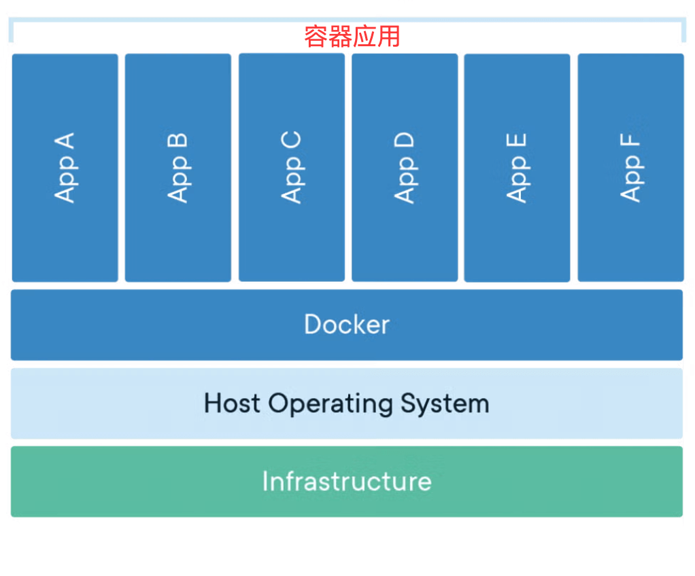
在传统的应用部署中，我们经常遇到以下问题：
容器化技术通过以下方式解决了这些问题：
容器化遵循"不可变基础设施"的理念：
定义：镜像是一个只读的模板，包含了运行应用所需的所有内容：代码、运行时、库文件、环境变量和配置文件。
特点：
类比理解：镜像就像是一个安装程序或者模板，它定义了应用运行所需的一切，但本身不能直接运行。
定义：容器是镜像的运行实例，是一个轻量级、可移植的执行环境。
特点：
类比理解：如果镜像是类，那么容器就是对象实例。一个镜像可以创建多个容器，就像一个类可以创建多个对象。
定义：仓库是存储和分发镜像的地方，可以包含一个镜像的多个版本。
分类：
Registry vs Repository：
| 特性 | 虚拟机 | Docker容器 |
|---|---|---|
| 隔离级别 | 硬件级别虚拟化 | 操作系统级别虚拟化 |
| 操作系统 | 每个VM需要完整OS | 共享宿主机OS内核 |
| 资源占用 | 重量级，占用较多资源 | 轻量级，资源占用少 |
| 启动时间 | 分钟级别 | 秒级别 |
| 性能开销 | 较大 | 接近原生性能 |
| 镜像大小 | GB级别 | MB级别 |
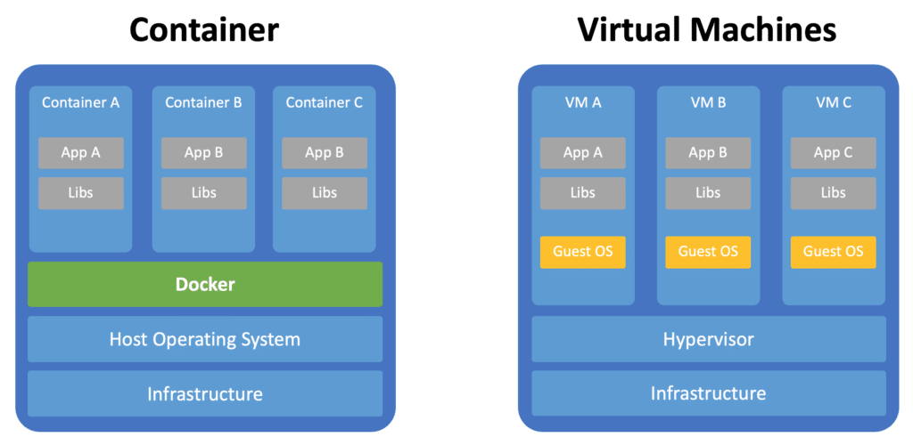
虚拟机适用场景：
Docker容器适用场景：
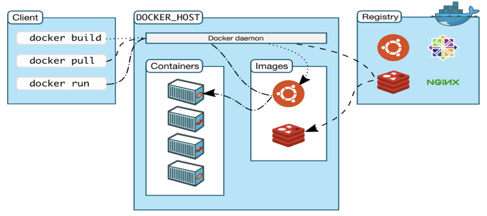
功能：
常用命令：
docker run - 运行容器docker build - 构建镜像docker pull - 拉取镜像docker ps - 查看容器状态功能：
主要职责：
组成：
工作流程：
作用：
Docker Hub特点：
Docker 架构是基于客户端-服务器模式的，其中包括多个关键组件，确保容器化应用的高效构建、管理和运行。
Docker 的架构设计使得开发者能够轻松地将应用程序与其所有依赖封装在一个可移植的容器中，并在不同的环境中一致地运行。
Docker 使用客户端-服务器 (C/S) 架构模式，使用远程 API 来管理和创建 Docker 容器。
Docker 容器通过 Docker 镜像来创建。
容器与镜像的关系类似于面向对象编程中的对象与类。
| Docker | 面向对象 |
|---|---|
| 容器 | 对象 |
| 镜像 | 类 |
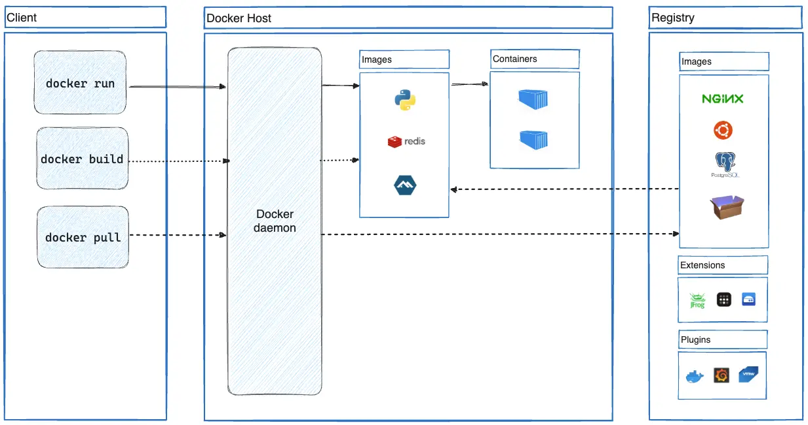
Dockerfile 创建镜像。docker pull 从注册表中拉取镜像。接下来让我们深入探讨 Docker 的核心组件及其工作机制。
Docker 客户端是用户与 Docker 守护进程交互的命令行界面（CLI）。它是用户与 Docker 系统的主要交互方式，用户通过 Docker CLI 发出命令，这些命令被发送到 Docker 守护进程，由守护进程执行相应的操作。
docker，通过它，用户可以发出各种 Docker 操作命令。docker run：运行容器。docker ps：列出正在运行的容器。docker build：构建 Docker 镜像。docker exec：在容器中执行命令。Docker 守护进程（通常是 dockerd）是 Docker 架构的核心，负责管理容器生命周期、构建镜像、分发镜像等任务。
守护进程通常以后台进程的方式运行，等待来自 Docker 客户端的 API 请求。
功能：
Docker 守护进程监听来自 Docker 客户端的请求，并且通过 Docker API 执行这些请求。守护进程将负责容器、镜像等 Docker 对象的管理，并根据请求的参数启动容器、删除容器、修改容器配置等。
启动 Docker 守护进程（通常是自动启动的）：
sudo systemctl start docker
Docker 引擎 API 是 Docker 提供的 RESTful 接口，允许外部客户端与 Docker 守护进程进行通信。通过这个 API，用户可以执行各种操作，如启动容器、构建镜像、查看容器状态等。API 提供了 HTTP 请求的接口，支持跨平台调用。
功能：
可以通过 curl 或其他 HTTP 客户端访问 Docker 引擎 API。例如，查询当前 Docker 守护进程的版本：
curl --unix-socket /var/run/docker.sock http://localhost/version
容器是 Docker 的执行环境，它是轻量级、独立且可执行的软件包。容器是从 Docker 镜像启动的，包含了运行某个应用程序所需的一切——从操作系统库到应用程序代码。容器在运行时与其他容器和宿主机共享操作系统内核，但容器之间的文件系统和进程是隔离的。
功能：
容器的生命周期是由 Docker 守护进程管理的。容器可以在任何地方运行，因为它们不依赖于底层操作系统的配置，所有的运行时依赖已经封装在镜像中。
启动一个容器：
docker run -d ubuntu
Docker 镜像是容器的只读模板。每个镜像都包含了应用程序运行所需的操作系统、运行时、库、环境变量和应用代码等。镜像是静态的，用户可以根据镜像启动容器。
功能：
Docker 镜像可以通过 docker pull 从 Docker Hub 或私有注册表拉取，也可以通过 docker build 从 Dockerfile 构建。
拉取 Ubuntu 镜像：
docker pull ubuntu
Docker 仓库是用来存储 Docker 镜像的地方，最常用的公共仓库是 Docker Hub。用户可以从 Docker Hub 下载镜像，也可以上传自己的镜像分享给其他人。除了公共仓库，用户也可以部署自己的私有 Docker 仓库来管理企业内部的镜像。
功能：
Docker Hub 提供了大量官方和社区维护的镜像，如 Ubuntu、Nginx、MySQL 等。
推送镜像到 Docker Hub：
docker push <username>/<image_name>
Docker Compose 是一个用于定义和运行多容器 Docker 应用的工具。通过 Compose，用户可以使用一个 docker-compose.yml 配置文件定义多个容器（服务），并可以通过一个命令启动这些容器。Docker Compose 主要用于开发、测试和部署多容器的应用。
功能：
创建一个简单的 docker-compose.yml 文件来配置一个包含 Web 服务和数据库服务的应用：
version: '3'
services:
web:
image: nginx
ports:
- "8080:80"
db:
image: mysql
environment:
MYSQL_ROOT_PASSWORD: example
启动 Compose 定义的所有服务：
docker-compose up
Docker Swarm 是 Docker 提供的集群管理和调度工具。它允许将多个 Docker 主机（节点）组织成一个集群，并通过 Swarm 集群管理工具来调度和管理容器。Swarm 可以实现容器的负载均衡、高可用性和自动扩展等功能。
功能：
初始化 Swarm 集群：
docker swarm init
Docker 网络允许容器之间相互通信，并与外部世界进行连接。Docker 提供了多种网络模式来满足不同的需求，如 bridge 网络（默认）、host 网络和 overlay 网络等。
功能：
创建一个自定义网络并将容器连接到该网络：
docker network create my_network docker run -d --network my_network ubuntu
Docker 卷是一种数据持久化机制，允许数据在容器之间共享，并且独立于容器的生命周期。与容器文件系统不同，卷的内容不会随着容器的销毁而丢失，适用于数据库等需要持久存储的应用。
功能：
创建并挂载卷：
docker volume create my_volume docker run -d -v my_volume:/data ubuntu
Docker Desktop 是 Docker 官方推出的 本地容器化开发环境，用于在 macOS / Windows（以及部分 Linux） 上：
一句话概括：
Docker Desktop = Docker Engine + Linux VM + GUI + 开发者体验优化
Docker Desktop 已经成为 本地 Docker 开发的事实标准。
在没有 Docker Desktop 之前，本地使用 Docker 存在大量问题：
Docker Desktop 解决了这些问题：
| 能力 | 说明 |
|---|---|
| 一键安装 | 自动完成虚拟化与 Docker 安装 |
| 开箱即用 | 安装完成即可使用 |
| 图形界面 | 容器、镜像、日志可视化 |
| CLI 兼容 | 与原生 docker 命令完全一致 |
| Kubernetes | 可一键启用本地 K8s |
理解架构有助于避免常见误解。
宿主系统（macOS / Windows）
└── Docker Desktop
└── Linux 虚拟机
└── Docker Engine
├── Images
├── Containers
└── Volumes
关键点：
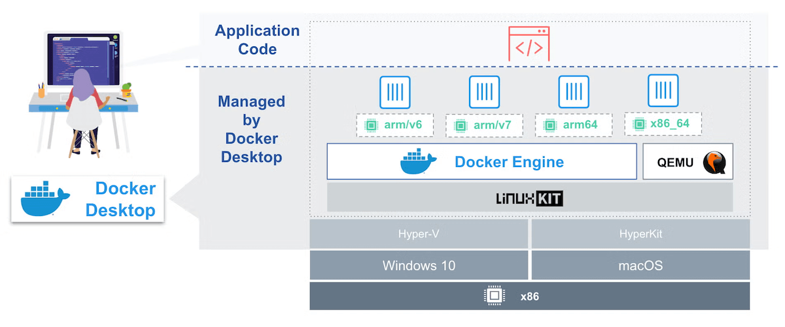
下载 Docker Desktop 安装包，下载地址：https://www.docker.com/products/docker-desktop/
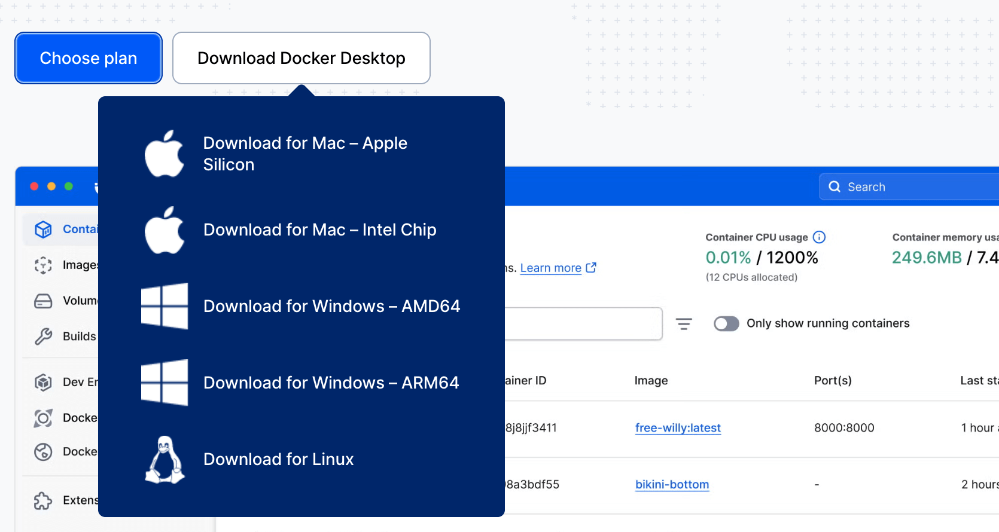
启动成功后：
docker version 能正常输出Docker Desktop 的 GUI 主要分为以下模块：
| 模块 | 作用 |
|---|---|
| Containers | 管理正在运行的容器 |
| Images | 查看本地镜像 |
| Volumes | 管理数据卷 |
| Builds | 构建记录 |
| Settings | 配置资源、网络、K8s |
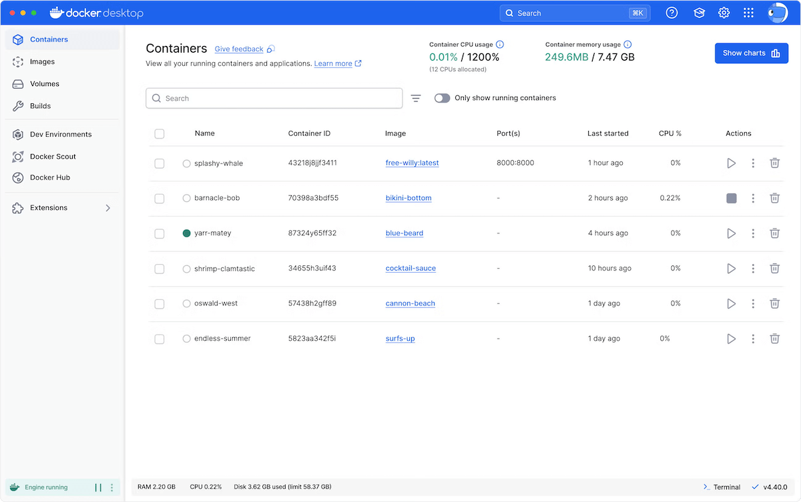
理解 Docker 只需要记住这个简单的类比：
| 概念 | 类比 | 说明 |
|---|---|---|
| 镜像 (Image) | 菜谱 | 只读的文件，包含了运行程序所需的所有代码、环境和库。 |
| 容器 (Container) | 做好的菜 | 镜像的运行实例。你可以根据一个菜谱做很多盘菜。 |
| 仓库 (Registry) | 美食广场 | 存储和分享镜像的地方，最著名的是 Docker Hub。 |
Docker Engine-Community 支持以下的 Ubuntu 版本：
Docker Engine - Community 支持上 x86_64（或 amd64）armhf，arm64，s390x （IBM Z），和 ppc64le（IBM的Power）架构。
安装命令如下：
# 下载并执行Docker官方安装脚本 curl -fsSL https://get.docker.com -o get-docker.sh sudo sh get-docker.sh # 启动Docker服务 sudo systemctl start docker sudo systemctl enable docker
Docker 的旧版本被称为 docker，docker.io 或 docker-engine 。如果已安装，请卸载它们：
$ sudo apt-get remove docker docker-engine docker.io containerd runc
当前称为 Docker Engine-Community 软件包 docker-ce 。
安装 Docker Engine-Community，以下介绍两种方式。
在新主机上首次安装 Docker Engine-Community 之前，需要设置 Docker 仓库。之后，您可以从仓库安装和更新 Docker 。
更新 apt 包索引。
$ sudo apt-get update
安装 apt 依赖包，用于通过HTTPS来获取仓库:
$ sudo apt-get install \添加 Docker 的官方 GPG 密钥：
curl -fsSL https://mirrors.ustc.edu.cn/docker-ce/linux/ubuntu/gpg -o /etc/apt/keyrings/docker.asc
使用以下指令设置稳定版仓库
echo \更新 apt 包索引。
$ sudo apt-get update
安装最新版本的 Docker Engine-Community 和 containerd ，或者转到下一步安装特定版本：
$ sudo apt-get install docker-ce docker-ce-cli containerd.io
要安装特定版本的 Docker Engine-Community，请在仓库中列出可用版本，然后选择一种安装。列出您的仓库中可用的版本：
$ apt-cache madison docker-ce使用第二列中的版本字符串安装特定版本，例如 5:18.09.1~3-0~ubuntu-xenial。
$ sudo apt-get install docker-ce=<VERSION_STRING> docker-ce-cli=<VERSION_STRING> containerd.io
测试 Docker 是否安装成功，输入以下指令，打印出以下信息则安装成功:
$ sudo docker run hello-worldDocker 在 get.docker.com 和 test.docker.com 上提供了方便脚本，用于将快速安装 Docker Engine-Community 的边缘版本和测试版本。脚本的源代码在 docker-install 仓库中。 不建议在生产环境中使用这些脚本，在使用它们之前，您应该了解潜在的风险：
脚本需要运行 root 或具有 sudo 特权。因此，在运行脚本之前，应仔细检查和审核脚本。
这些脚本尝试检测 Linux 发行版和版本，并为您配置软件包管理系统。此外，脚本不允许您自定义任何安装参数。从 Docker 的角度或您自己组织的准则和标准的角度来看，这可能导致不支持的配置。
这些脚本将安装软件包管理器的所有依赖项和建议，而无需进行确认。这可能会安装大量软件包，具体取决于主机的当前配置。
该脚本未提供用于指定要安装哪个版本的 Docker 的选项，而是安装了在 edge 通道中发布的最新版本。
如果已使用其他机制将 Docker 安装在主机上，请不要使用便捷脚本。
本示例使用 get.docker.com 上的脚本在 Linux 上安装最新版本的Docker Engine-Community。要安装最新的测试版本，请改用 test.docker.com。在下面的每个命令，取代每次出现 get 用 test。
$ curl -fsSL https://get.docker.com -o get-docker.sh $ sudo sh get-docker.sh
如果要使用 Docker 作为非 root 用户，则应考虑使用类似以下方式将用户添加到 docker 组：
$ sudo usermod -aG docker your-user
删除安装包：
sudo apt-get purge docker-ce
删除镜像、容器、配置文件等内容：
sudo rm -rf /var/lib/docker
Docker 支持以下的 64 位 Debian 版本：
支持的架构包括 x86_64（amd64）、armhf、arm64 和 ppc64le。
如果你之前安装过 Docker Engine 之前，你需要卸载旧版本，避免冲突：
for pkg in docker.io docker-doc docker-compose podman-docker containerd runc; do sudo apt-get remove $pkg; done
安装命令如下：
curl -fsSL https://get.docker.com -o get-docker.sh sudo sh get-docker.sh
首先，更新现有的软件包和包缓存：
sudo apt update sudo apt upgrade
安装一些需要的依赖包，这些包允许 apt 使用 HTTPS 协议来访问 Docker 仓库：
sudo apt install apt-transport-https ca-certificates curl software-properties-common
使用下面的命令来添加 Docker 官方的 GPG 密钥：
sudo curl -fsSL https://download.docker.com/linux/debian/gpg -o /etc/apt/keyrings/docker.asc sudo chmod a+r /etc/apt/keyrings/docker.asc
添加 Docker 官方的 APT 软件源：
echo \ "deb [arch=$(dpkg --print-architecture) signed-by=/etc/apt/keyrings/docker.asc] https://download.docker.com/linux/debian \ $(. /etc/os-release && echo "$VERSION_CODENAME") stable" | \ sudo tee /etc/apt/sources.list.d/docker.list > /dev/null # 更新 sudo apt-get update
添加仓库后，更新 APT 包索引：
sudo apt update
确保你现在从 Docker 官方仓库安装 Docker 而不是 Debian 默认仓库：
apt-cache policy docker-ce
你应该看到它指向 https://download.docker.com/，确保这就是官方的 Docker 仓库。
现在，你可以安装 Docker：
sudo apt-get install docker-ce docker-ce-cli containerd.io docker-buildx-plugin docker-compose-plugin
启动 Docker 并设置为开机自启：
sudo systemctl start docker sudo systemctl enable docker
你可以使用以下命令来验证 Docker 是否安装成功：
sudo docker --version
运行以下测试命令确保 Docker 正常工作：
sudo docker run hello-world
删除安装包：
sudo apt-get purge docker-ce
删除镜像、容器、配置文件等内容：
sudo rm -rf /var/lib/docker
Docker 支持以下的 64 位 CentOS 版本：
必须启用 centos-extras 仓库，该仓库默认启用，如果您禁用了它，需要重新启用。
安装命令如下：
$ curl -fsSL https://get.docker.com -o install-docker.sh $ sudo sh install-docker.sh
较旧的 Docker 版本称为 docker 或 docker-engine，如果已安装这些程序，请卸载它们以及相关的依赖项。
运行以下命令卸载旧版本：
sudo dnf remove docker \在新主机上首次安装 Docker 之前，需要设置 Docker 仓库。之后，您可以从仓库安装和更新 Docker。
设置仓库
安装 dnf-plugins-core 包（提供管理 DNF 仓库的命令），并设置仓库。
sudo dnf -y install dnf-plugins-core使用以下命令来设置稳定的仓库。
可以执行以下命令换成清华大学的镜像源：
参考地址：https://mirrors.tuna.tsinghua.edu.cn/help/docker-ce/
运行以下命令安装Docker：：
sudo dnf install docker-ce docker-ce-cli containerd.io docker-buildx-plugin docker-compose-plugin
如果提示接受 GPG 密钥，验证指纹是否与 060A 61C5 1B55 8A7F 742B 77AA C52F EB6B 621E 9F35 匹配，如果匹配则接受。
安装成功后，启动 Docker 引擎：
sudo systemctl start docker
如果希望 Docker 在系统启动时也启动可以使用以下命令：
sudo systemctl enable --now docker
以上命令会配置 Docker 的 systemd 服务，在系统启动时自动启动 Docker。
Docker 安装完默认未启动。并且已经创建好 docker 用户组，但该用户组下没有用户。
运行以下命令来验证安装是否成功：
sudo docker run hello-world
此命令会下载一个测试镜像，并在容器中运行，当容器运行时，会打印确认消息并退出。
删除安装包：
yum remove docker-ce
删除镜像、容器、配置文件等内容：
rm -rf /var/lib/docker
Docker 并非是一个通用的容器工具，它依赖于已存在并运行的 Linux 内核环境。
Docker 实质上是在已经运行的 Linux 下制造了一个隔离的文件环境，因此它执行的效率几乎等同于所部署的 Linux 主机。
因此，Docker 必须部署在 Linux 内核的系统上。如果其他系统想部署 Docker 就必须安装一个虚拟 Linux 环境。
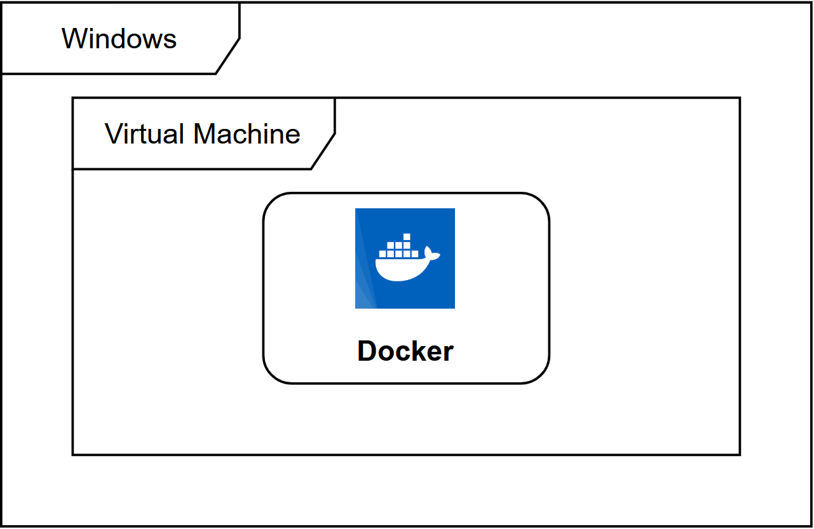
在 Windows 上部署 Docker 的方法都是先安装一个虚拟机，并在安装 Linux 系统的的虚拟机中运行 Docker。
Docker Desktop 是 Docker 在 Windows 10 和 macOS 操作系统上的官方安装方式，这个方法依然属于先在虚拟机中安装 Linux 然后再安装 Docker 的方法。
Docker Desktop 官方下载地址： https://docs.docker.com/desktop/install/windows-install/
注意：此方法仅适用于 Windows 10 操作系统专业版、企业版、教育版和部分家庭版！
Hyper-V 是微软开发的虚拟机，类似于 VMWare 或 VirtualBox，仅适用于 Windows 10。这是 Docker Desktop for Windows 所使用的虚拟机。
但是，这个虚拟机一旦启用，QEMU、VirtualBox 或 VMWare Workstation 15 及以下版本将无法使用！如果你必须在电脑上使用其他虚拟机（例如开发 Android 应用必须使用的模拟器），请不要使用 Hyper-V！
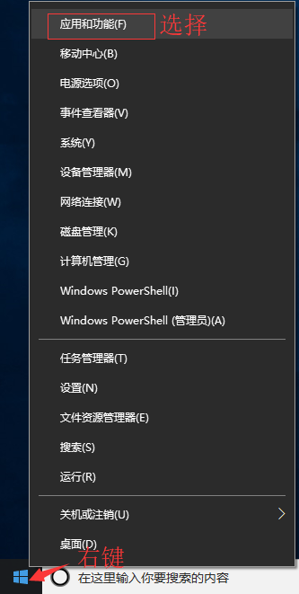
程序和功能
启用或关闭Windows功能
选中Hyper-V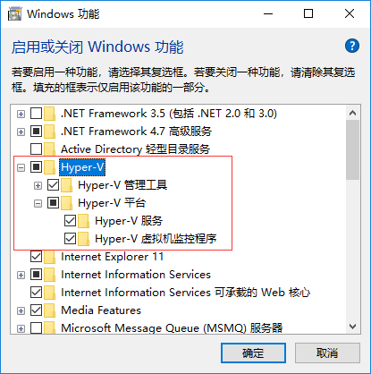
也可以通过命令来启用 Hyper-V ，请右键开始菜单并以管理员身份运行 PowerShell，执行以下命令：
Enable-WindowsOptionalFeature -Online -FeatureName Microsoft-Hyper-V -All
点击 Get started with Docker Desktop，并下载 Windows 的版本，如果你还没有登录，会要求注册登录：
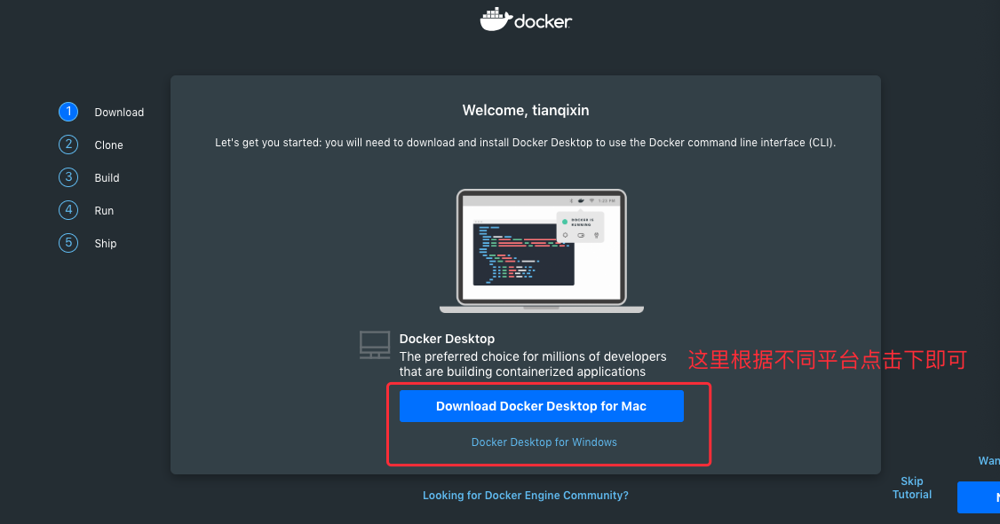
双击下载的 Docker for Windows Installer 安装文件，一路 Next，点击 Finish 完成安装。
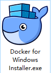
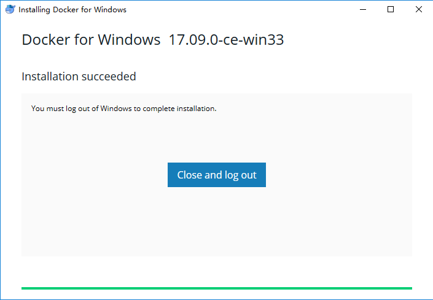
安装完成后，Docker 会自动启动。通知栏上会出现个小鲸鱼的图标，这表示 Docker 正在运行。
桌边也会出现三个图标，如下图所示：
我们可以在命令行执行 docker version 来查看版本号，docker run hello-world 来载入测试镜像测试。
如果没启动，你可以在 Windows 搜索 Docker 来启动：
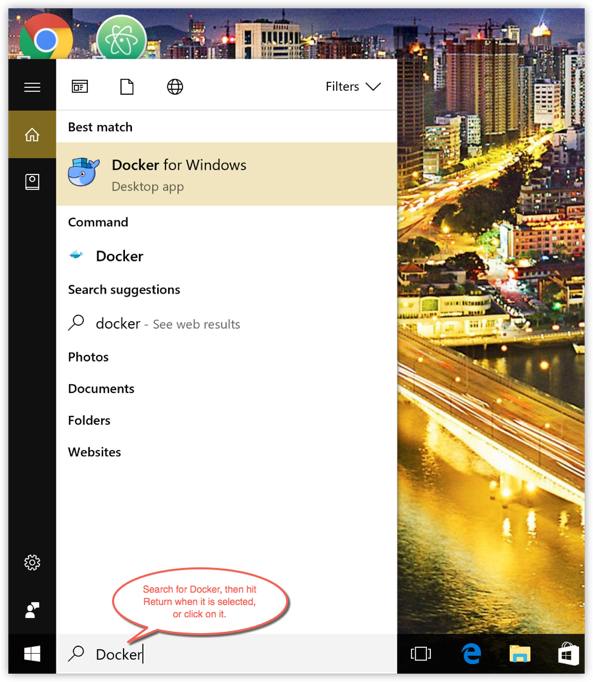
启动后，也可以在通知栏上看到小鲸鱼图标：
如果启动中遇到因 WSL 2 导致地错误，请安装 WSL 2。
安装之后，可以打开 PowerShell 并运行以下命令检测是否运行成功：
docker run hello-world
在成功运行之后应该会出现以下信息：
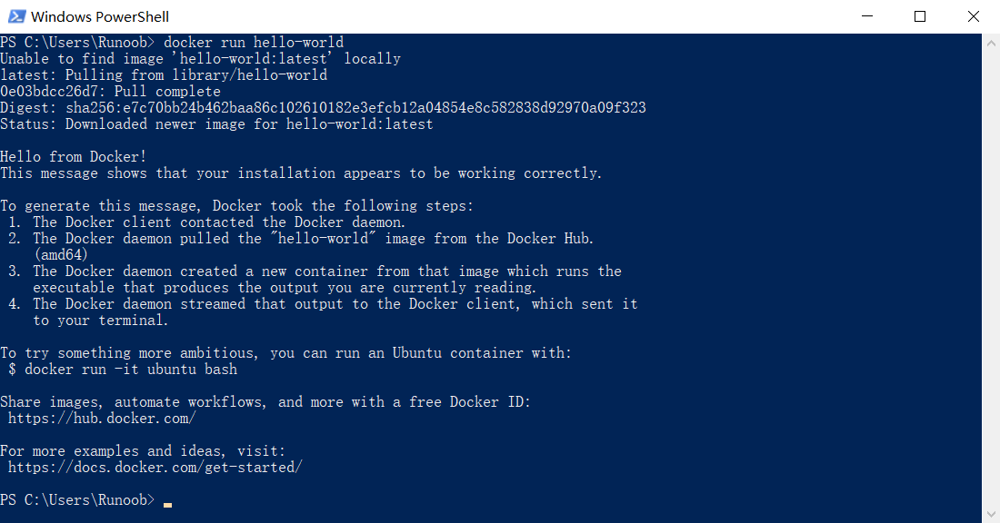
win7、win8 等需要利用 docker toolbox 来安装，国内可以使用阿里云的镜像来下载，下载地址：http://mirrors.aliyun.com/docker-toolbox/windows/docker-toolbox/
安装比较简单，双击运行，点下一步即可，可以勾选自己需要的组件：
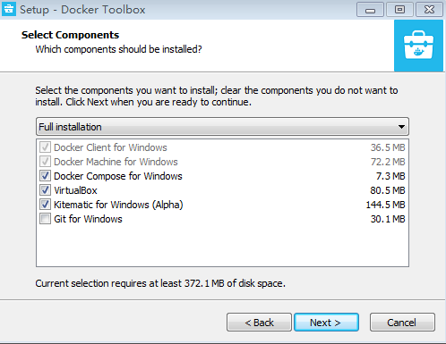
docker toolbox 是一个工具集，它主要包含以下一些内容：
下载完成之后直接点击安装，安装成功后，桌边会出现三个图标，如下图所示：
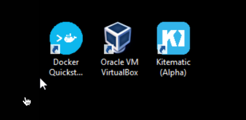
点击 Docker QuickStart 图标来启动 Docker Toolbox 终端。
如果系统显示 User Account Control 窗口来运行 VirtualBox 修改你的电脑，选择 Yes。
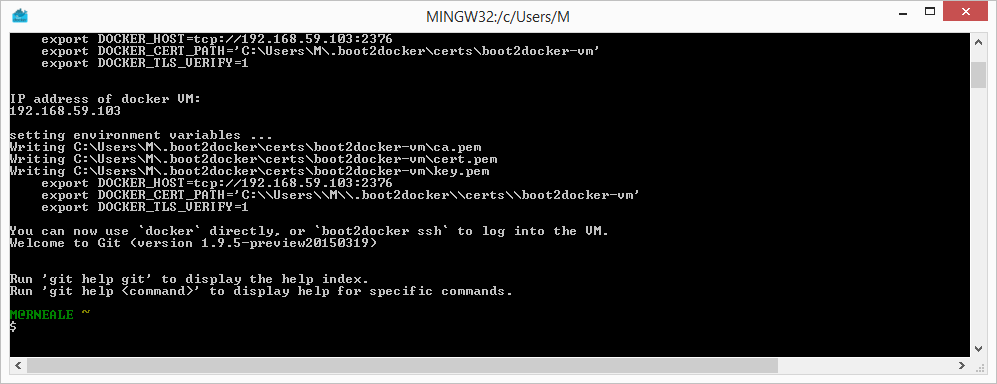
$ 符号那里可以输入以下命令来执行。
$ docker run hello-world
Unable to find image 'hello-world:latest' locally
Pulling repository hello-world
91c95931e552: Download complete
a8219747be10: Download complete
Status: Downloaded newer image for hello-world:latest
Hello from Docker.
This message shows that your installation appears to be working correctly.
To generate this message, Docker took the following steps:
1. The Docker Engine CLI client contacted the Docker Engine daemon.
2. The Docker Engine daemon pulled the "hello-world" image from the Docker Hub.
(Assuming it was not already locally available.)
3. The Docker Engine daemon created a new container from that image which runs the
executable that produces the output you are currently reading.
4. The Docker Engine daemon streamed that output to the Docker Engine CLI client, which sent it
to your terminal.
To try something more ambitious, you can run an Ubuntu container with:
$ docker run -it ubuntu bash
For more examples and ideas, visit:
https://docs.docker.com/userguide/
macOS 我们可以使用 Homebrew 来安装 Docker。
Homebrew 的 Cask 已经支持 Docker for Mac，因此可以很方便的使用 Homebrew Cask 来进行安装：
$ brew install --cask --appdir=/Applications docker ==> Creating Caskroom at /usr/local/Caskroom ==> We'll set permissions properly so we won't need sudo in the future Password: # 输入 macOS 密码 ==> Satisfying dependencies ==> Downloading https://download.docker.com/mac/stable/21090/Docker.dmg ######################################################################## 100.0% ==> Verifying checksum for Cask docker ==> Installing Cask docker ==> Moving App 'Docker.app' to '/Applications/Docker.app'. 🍺 docker was successfully installed!
在载入 Docker app 后，点击 Next，可能会询问你的 macOS 登陆密码，你输入即可。之后会弹出一个 Docker 运行的提示窗口，状态栏上也有有个小鲸鱼的图标（）。
如果需要手动下载，请点击以下链接下载 Install Docker Desktop on Mac 。
如同 macOS 其它软件一样，安装也非常简单，双击下载的 .dmg 文件，然后将鲸鱼图标拖拽到 Application 文件夹即可。
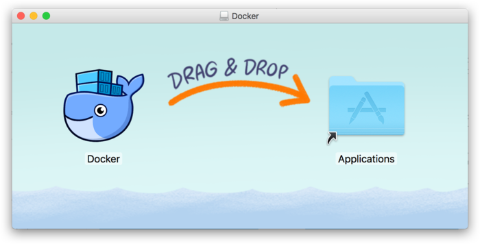
从应用中找到 Docker 图标并点击运行。可能会询问 macOS 的登陆密码，输入即可。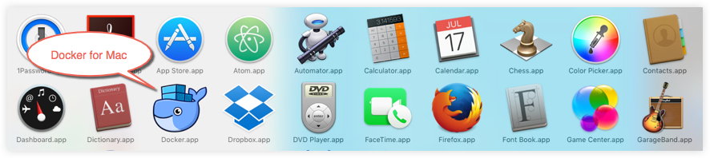
点击顶部状态栏中的鲸鱼图标会弹出操作菜单。
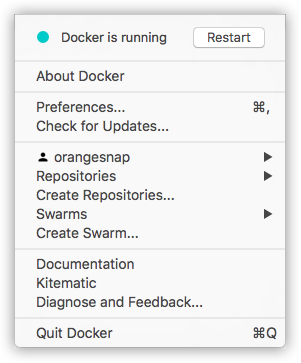
第一次点击图标，可能会看到这个安装成功的界面，点击 "Got it!" 可以关闭这个窗口。
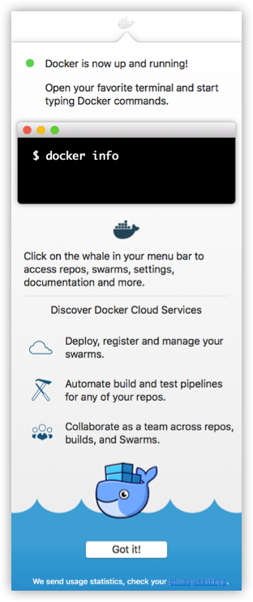
启动终端后，通过命令可以检查安装后的 Docker 版本。
$ docker --version Docker version 17.09.1-ce, build 19e2cf6
鉴于国内网络问题，后续拉取 Docker 镜像十分缓慢，我们可以需要配置加速器来解决，我使用的是网易的镜像地址：http://hub-mirror.c.163.com。
在任务栏点击 Docker for mac 应用图标 -> Perferences... -> Daemon -> Registry mirrors。在列表中填写加速器地址即可。修改完成之后，点击 Apply & Restart 按钮，Docker 就会重启并应用配置的镜像地址了。
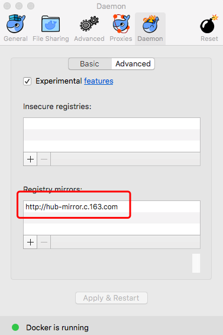
之后我们可以通过 docker info 来查看是否配置成功。
$ docker info ... Registry Mirrors: http://hub-mirror.c.163.com Live Restore Enabled: false
国内从 DockerHub 拉取镜像有时会遇到困难，此时可以配置镜像加速器。
目前国内 Docker 镜像源出现了一些问题，基本不能用了，后期能用我再更新下。
Docker 官方和国内很多云服务商都提供了国内加速器服务，例如：
当配置某一个加速器地址之后，若发现拉取不到镜像，请切换到另一个加速器地址。国内各大云服务商均提供了 Docker 镜像加速服务，建议根据运行 Docker 的云平台选择对应的镜像加速服务。
阿里云镜像获取地址：https://cr.console.aliyun.com/cn-hangzhou/instances/mirrors，登陆后，左侧菜单选中镜像加速器就可以看到你的专属地址了：
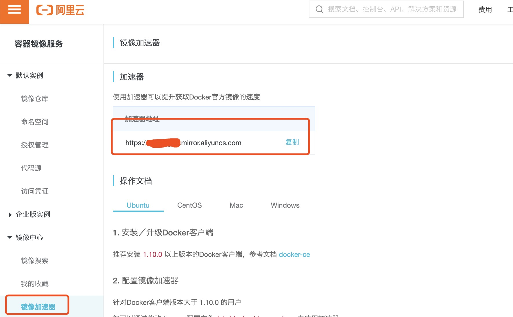
之前还有 Docker 官方加速器 https://registry.docker-cn.com ，现在好像已经不能使用了，我们可以多添加几个国内的镜像，如果有不能使用的，会切换到可以使用的镜像来拉取。
对于使用 upstart 的系统而言，编辑 /etc/default/docker 文件，在其中的 DOCKER_OPTS 中配置加速器地址：
DOCKER_OPTS="--registry-mirror=https://registry.docker-cn.com"
重新启动服务:
$ sudo service docker restart
对于使用 systemd 的系统，请在 /etc/docker/daemon.json 中写入如下内容（如果文件不存在请新建该文件）：
{"registry-mirrors":["https://reg-mirror.qiniu.com/"]}
之后重新启动服务：
$ sudo systemctl daemon-reload对于使用 Windows 10 的系统，在系统右下角托盘 Docker 图标内右键菜单选择 Settings，打开配置窗口后左侧导航菜单选择 Daemon。在 Registrymirrors 一栏中填写加速器地址 https://docker.mirrors.ustc.edu.cn/ ，之后点击 Apply 保存后 Docker 就会重启并应用配置的镜像地址了。
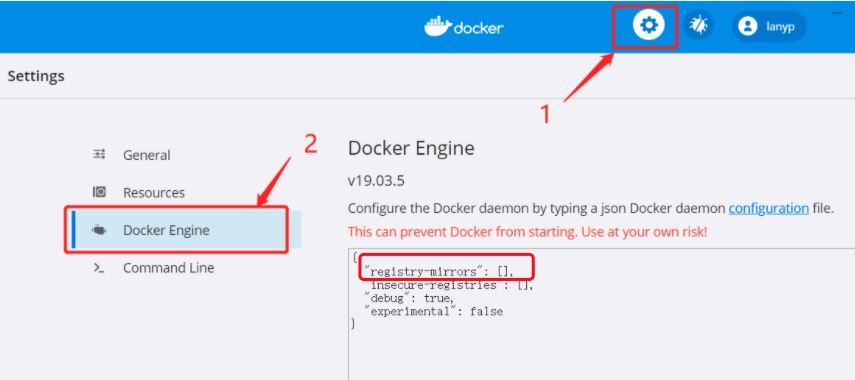
对于使用 Mac OS X 的用户，在任务栏点击 Docker for mac 应用图标-> Perferences...-> Daemon-> Registrymirrors。在列表中填写加速器地址 https://reg-mirror.qiniu.com 。修改完成之后，点击 Apply&Restart 按钮，Docker 就会重启并应用配置的镜像地址了。
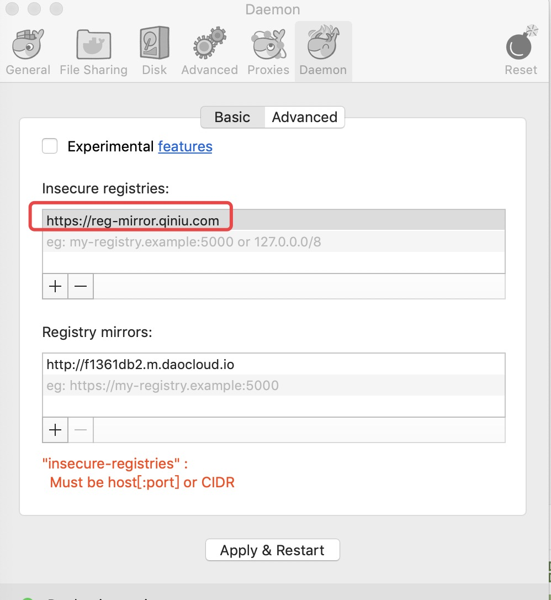
检查加速器是否生效配置加速器之后，如果拉取镜像仍然十分缓慢，请手动检查加速器配置是否生效，在命令行执行 docker info，如果从结果中看到了如下内容，说明配置成功。
$ docker info
Registry Mirrors:
https://reg-mirror.qiniu.comDocker 允许你在容器内运行应用程序， 使用 docker run 命令来在容器内运行一个应用程序。
输出Hello world
runoob@runoob:~$ docker run ubuntu:15.10 /bin/echo "Hello world" Hello world
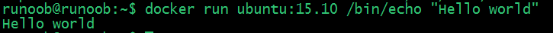
各个参数解析：
docker: Docker 的二进制执行文件。
run: 与前面的 docker 组合来运行一个容器。
ubuntu:15.10 指定要运行的镜像，Docker 首先从本地主机上查找镜像是否存在，如果不存在，Docker 就会从镜像仓库 Docker Hub 下载公共镜像。
/bin/echo "Hello world": 在启动的容器里执行的命令
以上命令完整的意思可以解释为：Docker 以 ubuntu15.10 镜像创建一个新容器，然后在容器里执行 bin/echo "Hello world"，然后输出结果。
我们通过 docker 的两个参数 -i -t，让 docker 运行的容器实现"对话"的能力：
runoob@runoob:~$ docker run -i -t ubuntu:15.10 /bin/bash root@0123ce188bd8:/#
各个参数解析：
-t: 在新容器内指定一个伪终端或终端。
-i: 允许你对容器内的标准输入 (STDIN) 进行交互。
注意第二行 root@0123ce188bd8:/#，此时我们已进入一个 ubuntu15.10 系统的容器
我们尝试在容器中运行命令 cat /proc/version和ls分别查看当前系统的版本信息和当前目录下的文件列表
root@0123ce188bd8:/# cat /proc/version Linux version 4.4.0-151-generic (buildd@lgw01-amd64-043) (gcc version 5.4.0 20160609 (Ubuntu 5.4.0-6ubuntu1~16.04.10) ) #178-Ubuntu SMP Tue Jun 11 08:30:22 UTC 2019 root@0123ce188bd8:/# ls bin boot dev etc home lib lib64 media mnt opt proc root run sbin srv sys tmp usr var root@0123ce188bd8:/#
我们可以通过运行 exit 命令或者使用 CTRL+D 来退出容器。
root@0123ce188bd8:/# exit exit root@runoob:~#
注意第三行中 root@runoob:~# 表明我们已经退出了当前的容器，返回到当前的主机中。
使用以下命令创建一个以进程方式运行的容器
runoob@runoob:~$ docker run -d ubuntu:15.10 /bin/sh -c "while true; do echo hello world; sleep 1; done" 2b1b7a428627c51ab8810d541d759f072b4fc75487eed05812646b8534a2fe63
在输出中，我们没有看到期望的 "hello world"，而是一串长字符
2b1b7a428627c51ab8810d541d759f072b4fc75487eed05812646b8534a2fe63
这个长字符串叫做容器 ID，对每个容器来说都是唯一的，我们可以通过容器 ID 来查看对应的容器发生了什么。
首先，我们需要确认容器有在运行，可以通过 docker ps 来查看：
runoob@runoob:~$ docker ps CONTAINER ID IMAGE COMMAND ... 5917eac21c36 ubuntu:15.10 "/bin/sh -c 'while t…" ...
输出详情介绍：
CONTAINER ID: 容器 ID。
IMAGE: 使用的镜像。
COMMAND: 启动容器时运行的命令。
CREATED: 容器的创建时间。
STATUS: 容器状态。
状态有7种：
PORTS: 容器的端口信息和使用的连接类型（tcp\udp）。
NAMES: 自动分配的容器名称。
在宿主主机内使用 docker logs 命令，查看容器内的标准输出：
runoob@runoob:~$ docker logs 2b1b7a428627
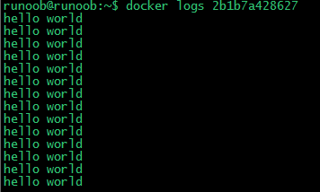
runoob@runoob:~$ docker logs amazing_cori
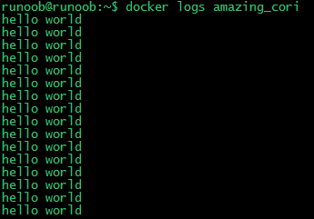
我们使用 docker stop 命令来停止容器:
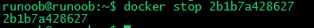
通过 docker ps 查看，容器已经停止工作:
runoob@runoob:~$ docker ps
可以看到容器已经不在了。
也可以用下面的命令来停止:
runoob@runoob:~$ docker stop amazing_cori
Docker 容器是一个轻量级、可移植、自给自足的软件环境，用于运行应用程序。
Docker 容器将应用程序及其所有依赖项（包括库、配置文件、系统工具等）封装在一个标准化的包中，使得应用能够在任何地方一致地运行。
容器是操作系统级别的虚拟化，不需要运行完整的操作系统，启动和运行更为高效。
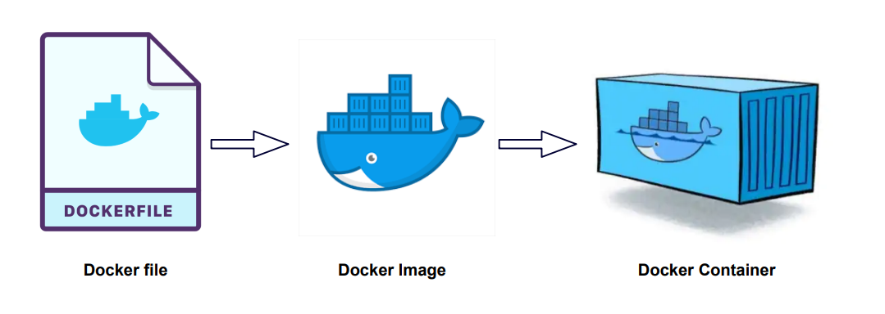
Docker 客户端是与 Docker 守护进程（Docker Daemon）交互的命令行工具。
docker 客户端非常简单，我们可以直接输入 docker 命令来查看到 Docker 客户端的所有命令选项。
runoob@runoob:~# docker
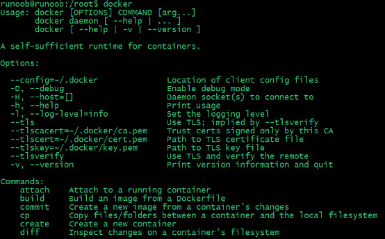
可以通过命令 docker command --help 更深入的了解指定的 Docker 命令使用方法。
例如我们要查看 docker stats 指令的具体使用方法：
runoob@runoob:~# docker stats --help
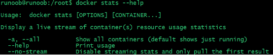
以下是常用的 Docker 客户端命令：
| 命令 | 功能 | 示例 |
|---|---|---|
docker run | 启动一个新的容器并运行命令 | docker run -d ubuntu |
docker ps | 列出当前正在运行的容器 | docker ps |
docker ps -a | 列出所有容器（包括已停止的容器） | docker ps -a |
docker build | 使用 Dockerfile 构建镜像 | docker build -t my-image . |
docker images | 列出本地存储的所有镜像 | docker images |
docker pull | 从 Docker 仓库拉取镜像 | docker pull ubuntu |
docker push | 将镜像推送到 Docker 仓库 | docker push my-image |
docker exec | 在运行的容器中执行命令 | docker exec -it container_name bash |
docker stop | 停止一个或多个容器 | docker stop container_name |
docker start | 启动已停止的容器 | docker start container_name |
docker restart | 重启一个容器 | docker restart container_name |
docker rm | 删除一个或多个容器 | docker rm container_name |
docker rmi | 删除一个或多个镜像 | docker rmi my-image |
docker logs | 查看容器的日志 | docker logs container_name |
docker inspect | 获取容器或镜像的详细信息 | docker inspect container_name |
docker exec -it | 进入容器的交互式终端 | docker exec -it container_name /bin/bash |
docker network ls | 列出所有 Docker 网络 | docker network ls |
docker volume ls | 列出所有 Docker 卷 | docker volume ls |
docker-compose up | 启动多容器应用（从 docker-compose.yml 文件） | docker-compose up |
docker-compose down | 停止并删除由 docker-compose 启动的容器、网络等 | docker-compose down |
docker info | 显示 Docker 系统的详细信息 | docker info |
docker version | 显示 Docker 客户端和守护进程的版本信息 | docker version |
docker stats | 显示容器的实时资源使用情况 | docker stats |
docker login | 登录 Docker 仓库 | docker login |
docker logout | 登出 Docker 仓库 | docker logout |
常用选项说明:
-d：后台运行容器，例如 docker run -d ubuntu。-it：以交互式终端运行容器，例如 docker exec -it container_name bash。-t：为镜像指定标签，例如 docker build -t my-image .。如果我们本地没有 ubuntu 镜像，我们可以使用 docker pull 命令来载入 ubuntu 镜像：
$ docker pull ubuntu
以下命令使用 ubuntu 镜像启动一个容器，参数为以命令行模式进入该容器：
$ docker run -it ubuntu /bin/bash
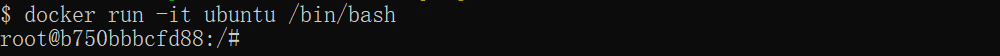
参数说明：
要退出终端，直接输入 exit:
root@ed09e4490c57:/# exit
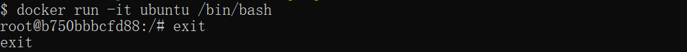
查看所有的容器命令如下：
$ docker ps -a
点击图片查看大图：
使用 docker start 启动一个已停止的容器：
$ docker start b750bbbcfd88
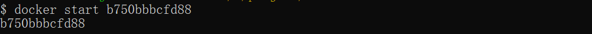
在大部分的场景下，我们希望 docker 的服务是在后台运行的，我们可以过 -d 指定容器的运行模式。
$ docker run -itd --name ubuntu-test ubuntu /bin/bash
点击图片查看大图：
注：加了 -d 参数默认不会进入容器，想要进入容器需要使用指令 docker exec（下面会介绍到）。
停止容器的命令如下：
$ docker stop <容器 ID>
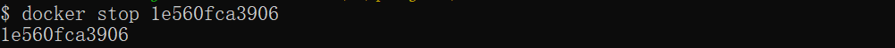
停止的容器可以通过 docker restart 重启：
$ docker restart <容器 ID>
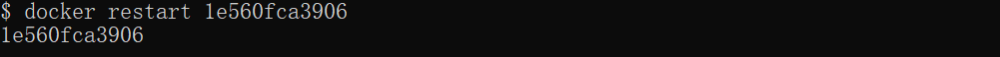
在使用 -d 参数时启动容器时，容器会运行在后台，这时如果要进入容器，可以通过以下命令进入：
docker attach：允许你与容器的标准输入（stdin）、输出（stdout）和标准错误（stderr）进行交互。
docker exec：推荐大家使用 docker exec 命令，因为此命令会退出容器终端，但不会导致容器的停止。
attach 命令
使用 docker attach 命令实例：
$ docker attach 1e560fca3906
注意： 如果从这个容器退出，会导致容器的停止。
exec 命令
使用 docker exec 命令实例：
docker exec -it 243c32535da7 /bin/bash
注意： 如果从这个容器退出，容器不会停止，这就是为什么推荐大家使用 docker exec。
更多参数说明请使用 docker exec --help 命令查看。
导出容器
如果要导出本地某个容器，可以使用 docker export 命令。
$ docker export 1e560fca3906 > ubuntu.tar
导出容器 1e560fca3906 快照到本地文件 ubuntu.tar。
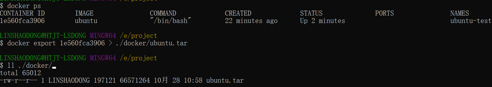
这样将导出容器快照到本地文件。
导入容器快照
可以使用 docker import 从容器快照文件中再导入为镜像，以下实例将快照文件 ubuntu.tar 导入到镜像 test/ubuntu:v1:
$ cat docker/ubuntu.tar | docker import - test/ubuntu:v1
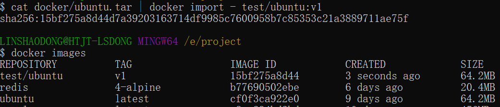
此外，也可以通过指定 URL 或者某个目录来导入，例如：
$ docker import http://example.com/exampleimage.tgz example/imagerepo
删除容器使用 docker rm 命令：
$ docker rm -f 1e560fca3906
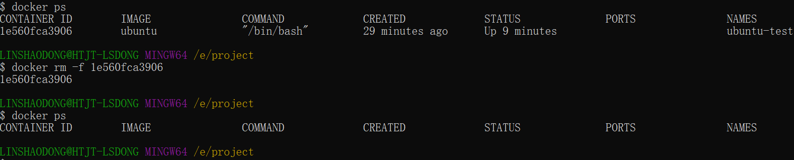
下面的命令可以清理掉所有处于终止状态的容器。
$ docker container prune
前面我们运行的容器并没有一些什么特别的用处。
接下来让我们尝试使用 docker 构建一个 web 应用程序。
我们将在docker容器中运行一个 Python Flask 应用来运行一个web应用。
runoob@runoob:~# docker pull training/webapp # 载入镜像 runoob@runoob:~# docker run -d -P training/webapp python app.py
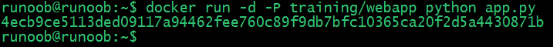
参数说明:
-d:让容器在后台运行。
-P:将容器内部使用的网络端口随机映射到我们使用的主机上。
使用 docker ps 来查看我们正在运行的容器：
runoob@runoob:~# docker ps CONTAINER ID IMAGE COMMAND ... PORTS d3d5e39ed9d3 training/webapp "python app.py" ... 0.0.0.0:32769->5000/tcp
这里多了端口信息。
PORTS 0.0.0.0:32769->5000/tcp
Docker 开放了 5000 端口（默认 Python Flask 端口）映射到主机端口 32769 上。
这时我们可以通过浏览器访问WEB应用
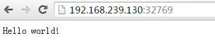
我们也可以通过 -p 参数来设置不一样的端口：
runoob@runoob:~$ docker run -d -p 5000:5000 training/webapp python app.py
docker ps查看正在运行的容器
runoob@runoob:~# docker ps CONTAINER ID IMAGE PORTS NAMES bf08b7f2cd89 training/webapp ... 0.0.0.0:5000->5000/tcp wizardly_chandrasekhar d3d5e39ed9d3 training/webapp ... 0.0.0.0:32769->5000/tcp xenodochial_hoov
容器内部的 5000 端口映射到我们本地主机的 5000 端口上。
通过 docker ps 命令可以查看到容器的端口映射，docker 还提供了另一个快捷方式 docker port，使用 docker port 可以查看指定 （ID 或者名字）容器的某个确定端口映射到宿主机的端口号。
上面我们创建的 web 应用容器 ID 为 bf08b7f2cd89 名字为 wizardly_chandrasekhar。
我可以使用 docker port bf08b7f2cd89 或 docker port wizardly_chandrasekhar 来查看容器端口的映射情况。
runoob@runoob:~$ docker port bf08b7f2cd89 5000/tcp -> 0.0.0.0:5000
runoob@runoob:~$ docker port wizardly_chandrasekhar 5000/tcp -> 0.0.0.0:5000
docker logs [ID或者名字] 可以查看容器内部的标准输出。
runoob@runoob:~$ docker logs -f bf08b7f2cd89 * Running on http://0.0.0.0:5000/ (Press CTRL+C to quit) 192.168.239.1 - - [09/May/2016 16:30:37] "GET / HTTP/1.1" 200 - 192.168.239.1 - - [09/May/2016 16:30:37] "GET /favicon.ico HTTP/1.1" 404 -
-f: 让 docker logs 像使用 tail -f 一样来输出容器内部的标准输出。
从上面，我们可以看到应用程序使用的是 5000 端口并且能够查看到应用程序的访问日志。
我们还可以使用 docker top 来查看容器内部运行的进程
runoob@runoob:~$ docker top wizardly_chandrasekhar UID PID PPID ... TIME CMD root 23245 23228 ... 00:00:00 python app.py
使用 docker inspect 来查看 Docker 的底层信息。它会返回一个 JSON 文件记录着 Docker 容器的配置和状态信息。
runoob@runoob:~$ docker inspect wizardly_chandrasekhar
[
{
"Id": "bf08b7f2cd897b5964943134aa6d373e355c286db9b9885b1f60b6e8f82b2b85",
"Created": "2018-09-17T01:41:26.174228707Z",
"Path": "python",
"Args": [
"app.py"
],
"State": {
"Status": "running",
"Running": true,
"Paused": false,
"Restarting": false,
"OOMKilled": false,
"Dead": false,
"Pid": 23245,
"ExitCode": 0,
"Error": "",
"StartedAt": "2018-09-17T01:41:26.494185806Z",
"FinishedAt": "0001-01-01T00:00:00Z"
},
......
runoob@runoob:~$ docker stop wizardly_chandrasekhar wizardly_chandrasekhar
已经停止的容器，我们可以使用命令 docker start 来启动。
runoob@runoob:~$ docker start wizardly_chandrasekhar wizardly_chandrasekhar
docker ps -l 查询最后一次创建的容器：
# docker ps -l CONTAINER ID IMAGE PORTS NAMES bf08b7f2cd89 training/webapp ... 0.0.0.0:5000->5000/tcp wizardly_chandrasekhar
正在运行的容器，我们可以使用 docker restart 命令来重启。
我们可以使用 docker rm 命令来删除不需要的容器
runoob@runoob:~$ docker rm wizardly_chandrasekhar wizardly_chandrasekhar
删除容器时，容器必须是停止状态，否则会报如下错误
runoob@runoob:~$ docker rm wizardly_chandrasekhar Error response from daemon: You cannot remove a running container bf08b7f2cd897b5964943134aa6d373e355c286db9b9885b1f60b6e8f82b2b85. Stop the container before attempting removal or force remove
当运行容器时，使用的镜像如果在本地中不存在，docker 就会自动从 docker 镜像仓库中下载，默认是从 Docker Hub 公共镜像源下载。
下面我们来学习：
我们可以使用 docker images 来列出本地主机上的镜像。
runoob@runoob:~$ docker images REPOSITORY TAG IMAGE ID CREATED SIZE ubuntu 14.04 90d5884b1ee0 5 days ago 188 MB php 5.6 f40e9e0f10c8 9 days ago 444.8 MB nginx latest 6f8d099c3adc 12 days ago 182.7 MB mysql 5.6 f2e8d6c772c0 3 weeks ago 324.6 MB httpd latest 02ef73cf1bc0 3 weeks ago 194.4 MB ubuntu 15.10 4e3b13c8a266 4 weeks ago 136.3 MB hello-world latest 690ed74de00f 6 months ago 960 B training/webapp latest 6fae60ef3446 11 months ago 348.8 MB
各个选项说明:
REPOSITORY：表示镜像的仓库源
TAG：镜像的标签
IMAGE ID：镜像ID
CREATED：镜像创建时间
SIZE：镜像大小
同一仓库源可以有多个 TAG，代表这个仓库源的不同个版本，如 ubuntu 仓库源里，有 15.10、14.04 等多个不同的版本，我们使用 REPOSITORY:TAG 来定义不同的镜像。
所以，我们如果要使用版本为15.10的ubuntu系统镜像来运行容器时，命令如下：
runoob@runoob:~$ docker run -t -i ubuntu:15.10 /bin/bash root@d77ccb2e5cca:/#
参数说明：
如果要使用版本为 14.04 的 ubuntu 系统镜像来运行容器时，命令如下：
runoob@runoob:~$ docker run -t -i ubuntu:14.04 /bin/bash root@39e968165990:/#
如果你不指定一个镜像的版本标签，例如你只使用 ubuntu，docker 将默认使用 ubuntu:latest 镜像。
当我们在本地主机上使用一个不存在的镜像时 Docker 就会自动下载这个镜像。如果我们想预先下载这个镜像，我们可以使用 docker pull 命令来下载它。
Crunoob@runoob:~$ docker pull ubuntu:13.10 13.10: Pulling from library/ubuntu 6599cadaf950: Pull complete 23eda618d451: Pull complete f0be3084efe9: Pull complete 52de432f084b: Pull complete a3ed95caeb02: Pull complete Digest: sha256:15b79a6654811c8d992ebacdfbd5152fcf3d165e374e264076aa435214a947a3 Status: Downloaded newer image for ubuntu:13.10
下载完成后，我们可以直接使用这个镜像来运行容器。
我们可以从 Docker Hub 网站来搜索镜像，Docker Hub 网址为： https://hub.docker.com/
我们也可以使用 docker search 命令来搜索镜像。比如我们需要一个 httpd 的镜像来作为我们的 web 服务。我们可以通过 docker search 命令搜索 httpd 来寻找适合我们的镜像。
runoob@runoob:~$ docker search httpd
点击图片查看大图：
NAME: 镜像仓库源的名称
DESCRIPTION: 镜像的描述
OFFICIAL: 是否 docker 官方发布
stars: 类似 Github 里面的 star，表示点赞、喜欢的意思。
AUTOMATED: 自动构建。
我们决定使用上图中的 httpd 官方版本的镜像，使用命令 docker pull 来下载镜像。
runoob@runoob:~$ docker pull httpd Using default tag: latest latest: Pulling from library/httpd 8b87079b7a06: Pulling fs layer a3ed95caeb02: Download complete 0d62ec9c6a76: Download complete a329d50397b9: Download complete ea7c1f032b5c: Waiting be44112b72c7: Waiting
下载完成后，我们就可以使用这个镜像了。
runoob@runoob:~$ docker run httpd
镜像删除使用 docker rmi 命令，比如我们删除 hello-world 镜像：
$ docker rmi hello-world
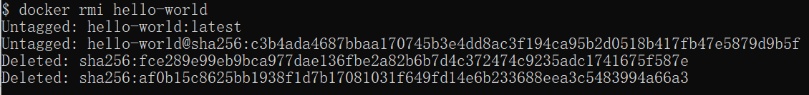
当我们从 docker 镜像仓库中下载的镜像不能满足我们的需求时，我们可以通过以下两种方式对镜像进行更改。
更新镜像之前，我们需要使用镜像来创建一个容器。
runoob@runoob:~$ docker run -t -i ubuntu:15.10 /bin/bash
进入容器后，更新系统：
apt-get update apt-get upgrade -y
在完成操作之后，输入 exit 命令来退出这个容器。
exit
此时 ID 为 e218edb10161 的容器，是按我们的需求更改的容器。我们可以通过命令 docker commit 来提交容器副本。
runoob@runoob:~$ docker commit -m="has update" -a="runoob" e218edb10161 runoob/ubuntu:v2 sha256:70bf1840fd7c0d2d8ef0a42a817eb29f854c1af8f7c59fc03ac7bdee9545aff8
各个参数说明：
-m: 提交的描述信息
-a: 指定镜像作者
e218edb10161：容器 ID
runoob/ubuntu:v2: 指定要创建的目标镜像名
我们可以使用 docker images 命令来查看我们的新镜像 runoob/ubuntu:v2：
runoob@runoob:~$ docker images REPOSITORY TAG IMAGE ID CREATED SIZE runoob/ubuntu v2 70bf1840fd7c 15 seconds ago 158.5 MB ubuntu 14.04 90d5884b1ee0 5 days ago 188 MB php 5.6 f40e9e0f10c8 9 days ago 444.8 MB nginx latest 6f8d099c3adc 12 days ago 182.7 MB mysql 5.6 f2e8d6c772c0 3 weeks ago 324.6 MB httpd latest 02ef73cf1bc0 3 weeks ago 194.4 MB ubuntu 15.10 4e3b13c8a266 4 weeks ago 136.3 MB hello-world latest 690ed74de00f 6 months ago 960 B training/webapp latest 6fae60ef3446 12 months ago 348.8 MB
使用我们的新镜像 runoob/ubuntu 来启动一个容器
runoob@runoob:~$ docker run -t -i runoob/ubuntu:v2 /bin/bash root@1a9fbdeb5da3:/#
我们使用命令 docker build ， 从零开始来创建一个新的镜像。为此，我们需要创建一个 Dockerfile 文件，其中包含一组指令来告诉 Docker 如何构建我们的镜像。
runoob@runoob:~$ cat Dockerfile FROM centos:6.7 MAINTAINER Fisher "fisher@sudops.com" RUN /bin/echo 'root:123456' |chpasswd RUN useradd runoob RUN /bin/echo 'runoob:123456' |chpasswd RUN /bin/echo -e "LANG=\"en_US.UTF-8\"" >/etc/default/local EXPOSE 22 EXPOSE 80 CMD /usr/sbin/sshd -D
每一个指令都会在镜像上创建一个新的层，每一个指令的前缀都必须是大写的。
第一条FROM，指定使用哪个镜像源
RUN 指令告诉docker 在镜像内执行命令，安装了什么。。。
然后，我们使用 Dockerfile 文件，通过 docker build 命令来构建一个镜像。
runoob@runoob:~$ docker build -t runoob/centos:6.7 . Sending build context to Docker daemon 17.92 kB Step 1 : FROM centos:6.7 ---> d95b5ca17cc3 Step 2 : MAINTAINER Fisher "fisher@sudops.com" ---> Using cache ---> 0c92299c6f03 Step 3 : RUN /bin/echo 'root:123456' |chpasswd ---> Using cache ---> 0397ce2fbd0a Step 4 : RUN useradd runoob ......
参数说明：
-t ：指定要创建的目标镜像名
. ：Dockerfile 文件所在目录，可以指定Dockerfile 的绝对路径
使用docker images 查看创建的镜像已经在列表中存在,镜像ID为860c279d2fec
runoob@runoob:~$ docker images REPOSITORY TAG IMAGE ID CREATED SIZE runoob/centos 6.7 860c279d2fec About a minute ago 190.6 MB runoob/ubuntu v2 70bf1840fd7c 17 hours ago 158.5 MB ubuntu 14.04 90d5884b1ee0 6 days ago 188 MB php 5.6 f40e9e0f10c8 10 days ago 444.8 MB nginx latest 6f8d099c3adc 12 days ago 182.7 MB mysql 5.6 f2e8d6c772c0 3 weeks ago 324.6 MB httpd latest 02ef73cf1bc0 3 weeks ago 194.4 MB ubuntu 15.10 4e3b13c8a266 5 weeks ago 136.3 MB hello-world latest 690ed74de00f 6 months ago 960 B centos 6.7 d95b5ca17cc3 6 months ago 190.6 MB training/webapp latest 6fae60ef3446 12 months ago 348.8 MB
我们可以使用新的镜像来创建容器
runoob@runoob:~$ docker run -t -i runoob/centos:6.7 /bin/bash [root@41c28d18b5fb /]# id runoob uid=500(runoob) gid=500(runoob) groups=500(runoob)
从上面看到新镜像已经包含我们创建的用户 runoob。
我们可以使用 docker tag 命令，为镜像添加一个新的标签。
runoob@runoob:~$ docker tag 860c279d2fec runoob/centos:dev
docker tag 镜像ID，这里是 860c279d2fec ,用户名称、镜像源名(repository name)和新的标签名(tag)。
使用 docker images 命令可以看到，ID为860c279d2fec的镜像多一个标签。
runoob@runoob:~$ docker images REPOSITORY TAG IMAGE ID CREATED SIZE runoob/centos 6.7 860c279d2fec 5 hours ago 190.6 MB runoob/centos dev 860c279d2fec 5 hours ago 190.6 MB runoob/ubuntu v2 70bf1840fd7c 22 hours ago 158.5 MB ubuntu 14.04 90d5884b1ee0 6 days ago 188 MB php 5.6 f40e9e0f10c8 10 days ago 444.8 MB nginx latest 6f8d099c3adc 13 days ago 182.7 MB mysql 5.6 f2e8d6c772c0 3 weeks ago 324.6 MB httpd latest 02ef73cf1bc0 3 weeks ago 194.4 MB ubuntu 15.10 4e3b13c8a266 5 weeks ago 136.3 MB hello-world latest 690ed74de00f 6 months ago 960 B centos 6.7 d95b5ca17cc3 6 months ago 190.6 MB training/webapp latest 6fae60ef3446 12 months ago 348.8 MB
前面我们实现了通过网络端口来访问运行在 docker 容器内的服务。
容器中可以运行一些网络应用，要让外部也可以访问这些应用，可以通过 -P 或 -p 参数来指定端口映射。
下面我们来实现通过端口连接到一个 docker 容器。
我们创建了一个 python 应用的容器。
runoob@runoob:~$ docker run -d -P training/webapp python app.py fce072cc88cee71b1cdceb57c2821d054a4a59f67da6b416fceb5593f059fc6d
另外，我们可以指定容器绑定的网络地址，比如绑定 127.0.0.1。
我们使用 -P 绑定端口号，使用 docker ps 可以看到容器端口 5000 绑定主机端口 32768。
runoob@runoob:~$ docker ps CONTAINER ID IMAGE COMMAND ... PORTS NAMES fce072cc88ce training/webapp "python app.py" ... 0.0.0.0:32768->5000/tcp grave_hopper
我们也可以使用 -p 标识来指定容器端口绑定到主机端口。
两种方式的区别是:
runoob@runoob:~$ docker run -d -p 5000:5000 training/webapp python app.py 33e4523d30aaf0258915c368e66e03b49535de0ef20317d3f639d40222ba6bc0
runoob@runoob:~$ docker ps CONTAINER ID IMAGE COMMAND ... PORTS NAMES 33e4523d30aa training/webapp "python app.py" ... 0.0.0.0:5000->5000/tcp berserk_bartik fce072cc88ce training/webapp "python app.py" ... 0.0.0.0:32768->5000/tcp grave_hopper
另外，我们可以指定容器绑定的网络地址，比如绑定 127.0.0.1。
runoob@runoob:~$ docker run -d -p 127.0.0.1:5001:5000 training/webapp python app.py 95c6ceef88ca3e71eaf303c2833fd6701d8d1b2572b5613b5a932dfdfe8a857c runoob@runoob:~$ docker ps CONTAINER ID IMAGE COMMAND ... PORTS NAMES 95c6ceef88ca training/webapp "python app.py" ... 5000/tcp, 127.0.0.1:5001->5000/tcp adoring_stonebraker 33e4523d30aa training/webapp "python app.py" ... 0.0.0.0:5000->5000/tcp berserk_bartik fce072cc88ce training/webapp "python app.py" ... 0.0.0.0:32768->5000/tcp grave_hopper
这样我们就可以通过访问 127.0.0.1:5001 来访问容器的 5000 端口。
上面的例子中，默认都是绑定 tcp 端口，如果要绑定 UDP 端口，可以在端口后面加上 /udp。
runoob@runoob:~$ docker run -d -p 127.0.0.1:5000:5000/udp training/webapp python app.py 6779686f06f6204579c1d655dd8b2b31e8e809b245a97b2d3a8e35abe9dcd22a runoob@runoob:~$ docker ps CONTAINER ID IMAGE COMMAND ... PORTS NAMES 6779686f06f6 training/webapp "python app.py" ... 5000/tcp, 127.0.0.1:5000->5000/udp drunk_visvesvaraya 95c6ceef88ca training/webapp "python app.py" ... 5000/tcp, 127.0.0.1:5001->5000/tcp adoring_stonebraker 33e4523d30aa training/webapp "python app.py" ... 0.0.0.0:5000->5000/tcp berserk_bartik fce072cc88ce training/webapp "python app.py" ... 0.0.0.0:32768->5000/tcp grave_hopper
docker port 命令可以让我们快捷地查看端口的绑定情况。
runoob@runoob:~$ docker port adoring_stonebraker 5000 127.0.0.1:5001
端口映射并不是唯一把 docker 连接到另一个容器的方法。
docker 有一个连接系统允许将多个容器连接在一起，共享连接信息。
docker 连接会创建一个父子关系，其中父容器可以看到子容器的信息。
当我们创建一个容器的时候，docker 会自动对它进行命名。另外，我们也可以使用 --name 标识来命名容器，例如：
runoob@runoob:~$ docker run -d -P --name runoob training/webapp python app.py 43780a6eabaaf14e590b6e849235c75f3012995403f97749775e38436db9a441
我们可以使用 docker ps 命令来查看容器名称。
runoob@runoob:~$ docker ps -l CONTAINER ID IMAGE COMMAND ... PORTS NAMES 43780a6eabaa training/webapp "python app.py" ... 0.0.0.0:32769->5000/tcp runoob
$ docker network create -d bridge test-net
参数说明：
-d：参数指定 Docker 网络类型，有 bridge、overlay。
其中 overlay 网络类型用于 Swarm mode，在本小节中你可以忽略它。
运行一个容器并连接到新建的 test-net 网络:
$ docker run -itd --name test1 --network test-net ubuntu /bin/bash
打开新的终端，再运行一个容器并加入到 test-net 网络:
$ docker run -itd --name test2 --network test-net ubuntu /bin/bash
点击图片查看大图：
下面通过 ping 来证明 test1 容器和 test2 容器建立了互联关系。
如果 test1、test2 容器内中无 ping 命令，则在容器内执行以下命令安装 ping（即学即用：可以在一个容器里安装好，提交容器到镜像，在以新的镜像重新运行以上俩个容器）。
apt-get update apt install iputils-ping
在 test1 容器输入以下命令：
点击图片查看大图：
同理在 test2 容器也会成功连接到:
点击图片查看大图：
这样，test1 容器和 test2 容器建立了互联关系。
如果你有多个容器之间需要互相连接，推荐使用 Docker Compose，后面会介绍。
我们可以在宿主机的 /etc/docker/daemon.json 文件中增加以下内容来设置全部容器的 DNS：
{
"dns" : [
"114.114.114.114",
"8.8.8.8"
]
}
设置后，启动容器的 DNS 会自动配置为 114.114.114.114 和 8.8.8.8。
配置完，需要重启 docker 才能生效。
查看容器的 DNS 是否生效可以使用以下命令，它会输出容器的 DNS 信息：
$ docker run -it --rm ubuntu cat etc/resolv.conf
点击图片查看大图：
手动指定容器的配置
如果只想在指定的容器设置 DNS，则可以使用以下命令：
$ docker run -it --rm -h host_ubuntu --dns=114.114.114.114 --dns-search=test.com ubuntu
参数说明：
--rm：容器退出时自动清理容器内部的文件系统。
-h HOSTNAME 或者 --hostname=HOSTNAME： 设定容器的主机名，它会被写到容器内的 /etc/hostname 和 /etc/hosts。
--dns=IP_ADDRESS： 添加 DNS 服务器到容器的 /etc/resolv.conf 中，让容器用这个服务器来解析所有不在 /etc/hosts 中的主机名。
--dns-search=DOMAIN： 设定容器的搜索域，当设定搜索域为 .example.com 时，在搜索一个名为 host 的主机时，DNS 不仅搜索 host，还会搜索 host.example.com。
点击图片查看大图：
如果在容器启动时没有指定 --dns 和 --dns-search，Docker 会默认用宿主主机上的 /etc/resolv.conf 来配置容器的 DNS。
仓库（Repository）是集中存放镜像的地方。以下介绍一下 Docker Hub。当然不止 docker hub，只是远程的服务商不一样，操作都是一样的。
目前 Docker 官方维护了一个公共仓库 Docker Hub。
大部分需求都可以通过在 Docker Hub 中直接下载镜像来实现。
在 https://hub.docker.com 免费注册一个 Docker 账号。
登录需要输入用户名和密码，登录成功后，我们就可以从 docker hub 上拉取自己账号下的全部镜像。
$ docker login
退出
退出 docker hub 可以使用以下命令：
$ docker logout拉取镜像
你可以通过 docker search 命令来查找官方仓库中的镜像，并利用 docker pull 命令来将它下载到本地。
以 ubuntu 为关键词进行搜索：
$ docker search ubuntu
使用 docker pull 将官方 ubuntu 镜像下载到本地：
$ docker pull ubuntu
用户登录后，可以通过 docker push 命令将自己的镜像推送到 Docker Hub。
以下命令中的 username 请替换为你的 Docker 账号用户名。
$ docker tag ubuntu:18.04 username/ubuntu:18.04 $ docker image ls REPOSITORY TAG IMAGE ID CREATED ... ubuntu 18.04 275d79972a86 6 days ago ... username/ubuntu 18.04 275d79972a86 6 days ago ... $ docker push username/ubuntu:18.04 $ docker search username/ubuntu NAME DESCRIPTION STARS OFFICIAL AUTOMATED username/ubuntu
Dockerfile 是一个文本文件，包含了构建 Docker 镜像的所有指令。
Dockerfile 是一个用来构建镜像的文本文件，文本内容包含了一条条构建镜像所需的指令和说明。
通过定义一系列命令和参数，Dockerfile 指导 Docker 构建一个自定义的镜像。
这里仅讲解如何运行 Dockerfile 文件来定制一个镜像，具体 Dockerfile 文件内指令详解，将在下一节中介绍，这里你只要知道构建的流程即可。
1、下面以定制一个 nginx 镜像（构建好的镜像内会有一个 /usr/share/nginx/html/index.html 文件）
在一个空目录下，新建一个名为 Dockerfile 文件，并在文件内添加以下内容：
FROM nginx RUN echo '这是一个本地构建的nginx镜像' > /usr/share/nginx/html/index.html
2、FROM 和 RUN 指令的作用
FROM：定制的镜像都是基于 FROM 的镜像，这里的 nginx 就是定制需要的基础镜像。后续的操作都是基于 nginx。
RUN：用于执行后面跟着的命令行命令。有以下俩种格式：
shell 格式：
RUN <命令行命令> # <命令行命令> 等同于，在终端操作的 shell 命令。
exec 格式：
RUN ["可执行文件", "参数1", "参数2"] # 例如： # RUN ["./test.php", "dev", "offline"] 等价于 RUN ./test.php dev offline
注意：Dockerfile 的指令每执行一次都会在 docker 上新建一层。所以过多无意义的层，会造成镜像膨胀过大。例如：
FROM centos以上执行会创建 3 层镜像。可简化为以下格式：
FROM centos如上，以 && 符号连接命令，这样执行后，只会创建 1 层镜像。
在 Dockerfile 文件的存放目录下，执行构建动作。
以下示例，通过目录下的 Dockerfile 构建一个 nginx:v3（镜像名称:镜像标签）。
注：最后的 . 代表本次执行的上下文路径，下一节会介绍。
$ docker build -t nginx:v3 .以上显示，说明已经构建成功。
上一节中，有提到指令最后一个 . 是上下文路径，那么什么是上下文路径呢？
$ docker build -t nginx:v3 .上下文路径，是指 docker 在构建镜像，有时候想要使用到本机的文件（比如复制），docker build 命令得知这个路径后，会将路径下的所有内容打包。
解析：由于 docker 的运行模式是 C/S。我们本机是 C，docker 引擎是 S。实际的构建过程是在 docker 引擎下完成的，所以这个时候无法用到我们本机的文件。这就需要把我们本机的指定目录下的文件一起打包提供给 docker 引擎使用。
如果未说明最后一个参数，那么默认上下文路径就是 Dockerfile 所在的位置。
注意：上下文路径下不要放无用的文件，因为会一起打包发送给 docker 引擎，如果文件过多会造成过程缓慢。
| Dockerfile 指令 | 说明 |
|---|---|
| FROM | 指定基础镜像，用于后续的指令构建。 |
| MAINTAINER | 指定Dockerfile的作者/维护者。（已弃用，推荐使用LABEL指令） |
| LABEL | 添加镜像的元数据，使用键值对的形式。 |
| RUN | 在构建过程中在镜像中执行命令。 |
| CMD | 指定容器创建时的默认命令。（可以被覆盖） |
| ENTRYPOINT | 设置容器创建时的主要命令。（不可被覆盖） |
| EXPOSE | 声明容器运行时监听的特定网络端口。 |
| ENV | 在容器内部设置环境变量。 |
| ADD | 将文件、目录或远程URL复制到镜像中。 |
| COPY | 将文件或目录复制到镜像中。 |
| VOLUME | 为容器创建挂载点或声明卷。 |
| WORKDIR | 设置后续指令的工作目录。 |
| USER | 指定后续指令的用户上下文。 |
| ARG | 定义在构建过程中传递给构建器的变量，可使用 "docker build" 命令设置。 |
| ONBUILD | 当该镜像被用作另一个构建过程的基础时，添加触发器。 |
| STOPSIGNAL | 设置发送给容器以退出的系统调用信号。 |
| HEALTHCHECK | 定义周期性检查容器健康状态的命令。 |
| SHELL | 覆盖Docker中默认的shell，用于RUN、CMD和ENTRYPOINT指令。 |
复制指令，从上下文目录中复制文件或者目录到容器里指定路径。
格式：
COPY [--chown=<user>:<group>] <源路径1>... <目标路径> COPY [--chown=<user>:<group>] ["<源路径1>",... "<目标路径>"]
[--chown=<user>:<group>]：可选参数，用户改变复制到容器内文件的拥有者和属组。
<源路径>：源文件或者源目录，这里可以是通配符表达式，其通配符规则要满足 Go 的 filepath.Match 规则。例如：
COPY hom* /mydir/ COPY hom?.txt /mydir/
<目标路径>：容器内的指定路径，该路径不用事先建好，路径不存在的话，会自动创建。
ADD 指令和 COPY 的使用格类似（同样需求下，官方推荐使用 COPY）。功能也类似，不同之处如下：
类似于 RUN 指令，用于运行程序，但二者运行的时间点不同:
作用：为启动的容器指定默认要运行的程序，程序运行结束，容器也就结束。CMD 指令指定的程序可被 docker run 命令行参数中指定要运行的程序所覆盖。
注意：如果 Dockerfile 中如果存在多个 CMD 指令，仅最后一个生效。
格式：
CMD <shell 命令> CMD ["<可执行文件或命令>","<param1>","<param2>",...] CMD ["<param1>","<param2>",...] # 该写法是为 ENTRYPOINT 指令指定的程序提供默认参数
推荐使用第二种格式，执行过程比较明确。第一种格式实际上在运行的过程中也会自动转换成第二种格式运行，并且默认可执行文件是 sh。
类似于 CMD 指令，但其不会被 docker run 的命令行参数指定的指令所覆盖，而且这些命令行参数会被当作参数送给 ENTRYPOINT 指令指定的程序。
但是, 如果运行 docker run 时使用了 --entrypoint 选项，将覆盖 ENTRYPOINT 指令指定的程序。
优点：在执行 docker run 的时候可以指定 ENTRYPOINT 运行所需的参数。
注意：如果 Dockerfile 中如果存在多个 ENTRYPOINT 指令，仅最后一个生效。
格式：
ENTRYPOINT ["<executeable>","<param1>","<param2>",...]
可以搭配 CMD 命令使用：一般是变参才会使用 CMD ，这里的 CMD 等于是在给 ENTRYPOINT 传参，以下示例会提到。
示例：
假设已通过 Dockerfile 构建了 nginx:test 镜像：
FROM nginx ENTRYPOINT ["nginx", "-c"] # 定参 CMD ["/etc/nginx/nginx.conf"] # 变参
1、不传参运行
$ docker run nginx:test
容器内会默认运行以下命令，启动主进程。
nginx -c /etc/nginx/nginx.conf
2、传参运行
$ docker run nginx:test -c /etc/nginx/new.conf
容器内会默认运行以下命令，启动主进程(/etc/nginx/new.conf:假设容器内已有此文件)
nginx -c /etc/nginx/new.conf
设置环境变量，定义了环境变量，那么在后续的指令中，就可以使用这个环境变量。
格式：
ENV <key> <value> ENV <key1>=<value1> <key2>=<value2>...
以下示例设置 NODE_VERSION = 7.2.0 ， 在后续的指令中可以通过 $NODE_VERSION 引用：
ENV NODE_VERSION 7.2.0 RUN curl -SLO "https://nodejs.org/dist/v$NODE_VERSION/node-v$NODE_VERSION-linux-x64.tar.xz" \ && curl -SLO "https://nodejs.org/dist/v$NODE_VERSION/SHASUMS256.txt.asc"
构建参数，与 ENV 作用一致。不过作用域不一样。ARG 设置的环境变量仅对 Dockerfile 内有效，也就是说只有 docker build 的过程中有效，构建好的镜像内不存在此环境变量。
构建命令 docker build 中可以用 --build-arg <参数名>=<值> 来覆盖。
格式：
ARG <参数名>[=<默认值>]
定义匿名数据卷。在启动容器时忘记挂载数据卷，会自动挂载到匿名卷。
作用：
格式：
VOLUME ["<路径1>", "<路径2>"...] VOLUME <路径>
在启动容器 docker run 的时候，我们可以通过 -v 参数修改挂载点。
仅仅只是声明端口。
作用：
格式：
EXPOSE <端口1> [<端口2>...]
指定工作目录。用 WORKDIR 指定的工作目录，会在构建镜像的每一层中都存在。以后各层的当前目录就被改为指定的目录，如该目录不存在，WORKDIR 会帮你建立目录。
docker build 构建镜像过程中的，每一个 RUN 命令都是新建的一层。只有通过 WORKDIR 创建的目录才会一直存在。
格式：
WORKDIR <工作目录路径>
用于指定执行后续命令的用户和用户组，这边只是切换后续命令执行的用户（用户和用户组必须提前已经存在）。
格式：
USER <用户名>[:<用户组>]
用于指定某个程序或者指令来监控 docker 容器服务的运行状态。
格式：
HEALTHCHECK [选项] CMD <命令>：设置检查容器健康状况的命令 HEALTHCHECK NONE：如果基础镜像有健康检查指令，使用这行可以屏蔽掉其健康检查指令 HEALTHCHECK [选项] CMD <命令> : 这边 CMD 后面跟随的命令使用，可以参考 CMD 的用法。
用于延迟构建命令的执行。简单的说，就是 Dockerfile 里用 ONBUILD 指定的命令，在本次构建镜像的过程中不会执行（假设镜像为 test-build）。当有新的 Dockerfile 使用了之前构建的镜像 FROM test-build ，这时执行新镜像的 Dockerfile 构建时候，会执行 test-build 的 Dockerfile 里的 ONBUILD 指定的命令。
格式：
ONBUILD <其它指令>
LABEL 指令用来给镜像添加一些元数据（metadata），以键值对的形式，语法格式如下：
LABEL <key>=<value> <key>=<value> <key>=<value> ...
比如我们可以添加镜像的作者：
LABEL org.opencontainers.image.authors="runoob"
Compose 是用于定义和运行多容器 Docker 应用程序的工具。通过 Compose，您可以使用 YML 文件来配置应用程序需要的所有服务。然后，使用一个命令，就可以从 YML 文件配置中创建并启动所有服务。
如果你还不了解 YML 文件配置，可以先阅读 YAML 入门教程。
Compose 使用的三个步骤：
使用 Dockerfile 定义应用程序的环境。
使用 docker-compose.yml 定义构成应用程序的服务，这样它们可以在隔离环境中一起运行。
最后，执行 docker-compose up 命令来启动并运行整个应用程序。
docker-compose.yml 的配置案例如下（配置参数参考下文）：
Linux 上我们可以从 Github 上下载它的二进制包来使用，最新发行的版本地址：https://github.com/docker/compose/releases。
运行以下命令以下载 Docker Compose 的当前稳定版本：
$ sudo curl -L "https://github.com/docker/compose/releases/download/v2.2.2/docker-compose-$(uname -s)-$(uname -m)" -o /usr/local/bin/docker-compose
要安装其他版本的 Compose，请替换 v2.2.2。
Docker Compose 存放在 GitHub，不太稳定。
你可以也通过执行下面的命令，高速安装 Docker Compose。
curl -L https://get.daocloud.io/docker/compose/releases/download/v2.4.1/docker-compose-`uname -s`-`uname -m` > /usr/local/bin/docker-compose
将可执行权限应用于二进制文件：
$ sudo chmod +x /usr/local/bin/docker-compose
创建软链：
$ sudo ln -s /usr/local/bin/docker-compose /usr/bin/docker-compose
测试是否安装成功：
$ docker-compose version cker-compose version 1.24.1, build 4667896b
注意： 对于 alpine，需要以下依赖包： py-pip，python-dev，libffi-dev，openssl-dev，gcc，libc-dev，和 make。
Mac 的 Docker 桌面版和 Docker Toolbox 已经包括 Compose 和其他 Docker 应用程序，因此 Mac 用户不需要单独安装 Compose。Docker 安装说明可以参阅 MacOS Docker 安装。
Windows 的 Docker 桌面版和 Docker Toolbox 已经包括 Compose 和其他 Docker 应用程序，因此 Windows 用户不需要单独安装 Compose。Docker 安装说明可以参阅 Windows Docker 安装。
创建一个测试目录：
$ mkdir composetest $ cd composetest
在测试目录中创建一个名为 app.py 的文件，并复制粘贴以下内容：
在此示例中，redis 是应用程序网络上的 redis 容器的主机名，该主机使用的端口为 6379。
在 composetest 目录中创建另一个名为 requirements.txt 的文件，内容如下：
flask redis
在 composetest 目录中，创建一个名为 Dockerfile 的文件，内容如下：
FROM python:3.7-alpine WORKDIR /code ENV FLASK_APP app.py ENV FLASK_RUN_HOST 0.0.0.0 RUN apk add --no-cache gcc musl-dev linux-headers COPY requirements.txt requirements.txt RUN pip install -r requirements.txt COPY . . CMD ["flask", "run"]
Dockerfile 内容解释：
ENV FLASK_APP app.py ENV FLASK_RUN_HOST 0.0.0.0
设置 flask 命令使用的环境变量。
COPY requirements.txt requirements.txt RUN pip install -r requirements.txt
复制 requirements.txt 并安装 Python 依赖项。
在测试目录中创建一个名为 docker-compose.yml 的文件，然后粘贴以下内容：
该 Compose 文件定义了两个服务：web 和 redis。
在测试目录中，执行以下命令来启动应用程序：
docker-compose up
如果你想在后台执行该服务可以加上 -d 参数：
docker-compose up -d
指定本 yml 依从的 compose 哪个版本制定的。
指定为构建镜像上下文路径：
例如 webapp 服务，指定为从上下文路径 ./dir/Dockerfile 所构建的镜像：
version: "3.7"
services:
webapp:
build: ./dir
或者，作为具有在上下文指定的路径的对象，以及可选的 Dockerfile 和 args：
version: "3.7"
services:
webapp:
build:
context: ./dir
dockerfile: Dockerfile-alternate
args:
buildno: 1
labels:
- "com.example.description=Accounting webapp"
- "com.example.department=Finance"
- "com.example.label-with-empty-value"
target: prod
添加或删除容器拥有的宿主机的内核功能。
cap_add: - ALL # 开启全部权限 cap_drop: - SYS_PTRACE # 关闭 ptrace权限
为容器指定父 cgroup 组，意味着将继承该组的资源限制。
cgroup_parent: m-executor-abcd
覆盖容器启动的默认命令。
command: ["bundle", "exec", "thin", "-p", "3000"]
指定自定义容器名称，而不是生成的默认名称。
container_name: my-web-container
设置依赖关系。
version: "3.7"
services:
web:
build: .
depends_on:
- db
- redis
redis:
image: redis
db:
image: postgres
注意：web 服务不会等待 redis db 完全启动 之后才启动。
指定与服务的部署和运行有关的配置。只在 swarm 模式下才会有用。
version: "3.7"
services:
redis:
image: redis:alpine
deploy:
mode：replicated
replicas: 6
endpoint_mode: dnsrr
labels:
description: "This redis service label"
resources:
limits:
cpus: '0.50'
memory: 50M
reservations:
cpus: '0.25'
memory: 20M
restart_policy:
condition: on-failure
delay: 5s
max_attempts: 3
window: 120s
可以选参数：
endpoint_mode：访问集群服务的方式。
endpoint_mode: vip # Docker 集群服务一个对外的虚拟 ip。所有的请求都会通过这个虚拟 ip 到达集群服务内部的机器。 endpoint_mode: dnsrr # DNS 轮询（DNSRR）。所有的请求会自动轮询获取到集群 ip 列表中的一个 ip 地址。
labels：在服务上设置标签。可以用容器上的 labels（跟 deploy 同级的配置） 覆盖 deploy 下的 labels。
mode：指定服务提供的模式。
replicated：复制服务，复制指定服务到集群的机器上。
global：全局服务，服务将部署至集群的每个节点。
图解：下图中黄色的方块是 replicated 模式的运行情况，灰色方块是 global 模式的运行情况。
replicas：mode 为 replicated 时，需要使用此参数配置具体运行的节点数量。
resources：配置服务器资源使用的限制，例如上例子，配置 redis 集群运行需要的 cpu 的百分比 和 内存的占用。避免占用资源过高出现异常。
restart_policy：配置如何在退出容器时重新启动容器。
rollback_config：配置在更新失败的情况下应如何回滚服务。
update_config：配置应如何更新服务，对于配置滚动更新很有用。
注：仅支持 V3.4 及更高版本。
指定设备映射列表。
devices: - "/dev/ttyUSB0:/dev/ttyUSB0"
自定义 DNS 服务器，可以是单个值或列表的多个值。
dns: 8.8.8.8 dns: - 8.8.8.8 - 9.9.9.9
自定义 DNS 搜索域。可以是单个值或列表。
dns_search: example.com dns_search: - dc1.example.com - dc2.example.com
覆盖容器默认的 entrypoint。
entrypoint: /code/entrypoint.sh
也可以是以下格式：
entrypoint:
- php
- -d
- zend_extension=/usr/local/lib/php/extensions/no-debug-non-zts-20100525/xdebug.so
- -d
- memory_limit=-1
- vendor/bin/phpunit
从文件添加环境变量。可以是单个值或列表的多个值。
env_file: .env
也可以是列表格式：
env_file: - ./common.env - ./apps/web.env - /opt/secrets.env
添加环境变量。您可以使用数组或字典、任何布尔值，布尔值需要用引号引起来，以确保 YML 解析器不会将其转换为 True 或 False。
environment: RACK_ENV: development SHOW: 'true'
暴露端口，但不映射到宿主机，只被连接的服务访问。
仅可以指定内部端口为参数：
expose: - "3000" - "8000"
添加主机名映射。类似 docker client --add-host。
extra_hosts: - "somehost:162.242.195.82" - "otherhost:50.31.209.229"
以上会在此服务的内部容器中 /etc/hosts 创建一个具有 ip 地址和主机名的映射关系：
162.242.195.82 somehost 50.31.209.229 otherhost
用于检测 docker 服务是否健康运行。
healthcheck: test: ["CMD", "curl", "-f", "http://localhost"] # 设置检测程序 interval: 1m30s # 设置检测间隔 timeout: 10s # 设置检测超时时间 retries: 3 # 设置重试次数 start_period: 40s # 启动后，多少秒开始启动检测程序
指定容器运行的镜像。以下格式都可以：
image: redis image: ubuntu:14.04 image: tutum/influxdb image: example-registry.com:4000/postgresql image: a4bc65fd # 镜像id
服务的日志记录配置。
driver：指定服务容器的日志记录驱动程序，默认值为json-file。有以下三个选项
driver: "json-file" driver: "syslog" driver: "none"
仅在 json-file 驱动程序下，可以使用以下参数，限制日志得数量和大小。
logging:
driver: json-file
options:
max-size: "200k" # 单个文件大小为200k
max-file: "10" # 最多10个文件
当达到文件限制上限，会自动删除旧的文件。
syslog 驱动程序下，可以使用 syslog-address 指定日志接收地址。
logging:
driver: syslog
options:
syslog-address: "tcp://192.168.0.42:123"
设置网络模式。
network_mode: "bridge" network_mode: "host" network_mode: "none" network_mode: "service:[service name]" network_mode: "container:[container name/id]"
networks
配置容器连接的网络，引用顶级 networks 下的条目 。
services:
some-service:
networks:
some-network:
aliases:
- alias1
other-network:
aliases:
- alias2
networks:
some-network:
# Use a custom driver
driver: custom-driver-1
other-network:
# Use a custom driver which takes special options
driver: custom-driver-2
aliases ：同一网络上的其他容器可以使用服务名称或此别名来连接到对应容器的服务。
restart: "no" restart: always restart: on-failure restart: unless-stopped
注：swarm 集群模式，请改用 restart_policy。
存储敏感数据，例如密码：
version: "3.1"
services:
mysql:
image: mysql
environment:
MYSQL_ROOT_PASSWORD_FILE: /run/secrets/my_secret
secrets:
- my_secret
secrets:
my_secret:
file: ./my_secret.txt
修改容器默认的 schema 标签。
security-opt： - label:user:USER # 设置容器的用户标签 - label:role:ROLE # 设置容器的角色标签 - label:type:TYPE # 设置容器的安全策略标签 - label:level:LEVEL # 设置容器的安全等级标签
指定在容器无法处理 SIGTERM (或者任何 stop_signal 的信号)，等待多久后发送 SIGKILL 信号关闭容器。
stop_grace_period: 1s # 等待 1 秒 stop_grace_period: 1m30s # 等待 1 分 30 秒
默认的等待时间是 10 秒。
设置停止容器的替代信号。默认情况下使用 SIGTERM 。
以下示例，使用 SIGUSR1 替代信号 SIGTERM 来停止容器。
stop_signal: SIGUSR1
设置容器中的内核参数，可以使用数组或字典格式。
sysctls: net.core.somaxconn: 1024 net.ipv4.tcp_syncookies: 0 sysctls: - net.core.somaxconn=1024 - net.ipv4.tcp_syncookies=0
在容器内安装一个临时文件系统。可以是单个值或列表的多个值。
tmpfs: /run tmpfs: - /run - /tmp
覆盖容器默认的 ulimit。
ulimits:
nproc: 65535
nofile:
soft: 20000
hard: 40000
将主机的数据卷或者文件挂载到容器里。
version: "3.7"
services:
db:
image: postgres:latest
volumes:
- "/localhost/postgres.sock:/var/run/postgres/postgres.sock"
- "/localhost/data:/var/lib/postgresql/data"Docker Machine 是 Docker 早期为创建和管理 Docker 主机而生的工具，但随着 Docker Desktop、Terraform 和 Kubernetes 的成熟，它已经完成历史使命，被全面替代。
Docker Desktop 在本地开发场景中 完全替代 了 Docker Machine，不再适合实际使用。
| 对比项 | Docker Machine | Docker Desktop |
|---|---|---|
| 产品定位 | Docker 主机创建与管理工具 | 本地 Docker 一体化开发环境 |
| 主要用途 | 创建 VM 并安装 Docker Engine | 在本地直接运行 Docker |
| 典型使用时代 | Docker 早期（1.x ～ 18.x） | 当前主流 |
| macOS / Windows 支持 | 间接（依赖 VirtualBox） | 原生支持 |
| 是否需要额外虚拟化软件 | 是（VirtualBox / VMware） | 否（内置） |
| Docker Engine 管理 | 手动/半自动 | 全自动 |
| 使用复杂度 | 高 | 低 |
| 是否提供 GUI | 否 | 是 |
| Kubernetes 支持 | 不支持 | 可选内置 |
| 多 Docker Host 管理 | 支持 | 不支持（侧重单机） |
| 适合生产环境 | 不适合 | 不适合 |
| 官方维护状态 | 基本停止更新 | 持续活跃 |
| 当前推荐度 | ❌ 不推荐 | ✅ 强烈推荐 |
Docker Machine 是一种可以让您在虚拟主机上安装 Docker 的工具，并可以使用 docker-machine 命令来管理主机。
Docker Machine 也可以集中管理所有的 docker 主机，比如快速的给 100 台服务器安装上 docker。
Docker Machine 管理的虚拟主机可以是机上的，也可以是云供应商，如阿里云，腾讯云，AWS，或 DigitalOcean。
使用 docker-machine 命令，您可以启动，检查，停止和重新启动托管主机，也可以升级 Docker 客户端和守护程序，以及配置 Docker 客户端与您的主机进行通信。
安装 Docker Machine 之前你需要先安装 Docker。
Docker Machine 可以在多种平台上安装使用，包括 Linux 、MacOS 以及 windows。
$ base=https://github.com/docker/machine/releases/download/v0.16.0 && curl -L $base/docker-machine-$(uname -s)-$(uname -m) >/tmp/docker-machine && sudo mv /tmp/docker-machine /usr/local/bin/docker-machine && chmod +x /usr/local/bin/docker-machine
$ base=https://github.com/docker/machine/releases/download/v0.16.0 && curl -L $base/docker-machine-$(uname -s)-$(uname -m) >/usr/local/bin/docker-machine && chmod +x /usr/local/bin/docker-machine
如果你是 Windows 平台，可以使用 Git BASH，并输入以下命令：
$ base=https://github.com/docker/machine/releases/download/v0.16.0 && mkdir -p "$HOME/bin" && curl -L $base/docker-machine-Windows-x86_64.exe > "$HOME/bin/docker-machine.exe" && chmod +x "$HOME/bin/docker-machine.exe"
查看是否安装成功：
$ docker-machine version docker-machine version 0.16.0, build 9371605
注意：各版本更新日志里面也有安装说明：https://github.com/docker/machine/releases
本章通过 virtualbox 来介绍 docker-machine 的使用方法。其他云服务商操作与此基本一致。具体可以参考每家服务商的指导文档。
可以看到目前只有这里默认的 default 虚拟机。
$ docker-machine ls
创建一台名为 test 的机器。
$ docker-machine create --driver virtualbox test
$ docker-machine ip test
$ docker-machine stop test
$ docker-machine start test
$ docker-machine ssh test
docker-machine active：查看当前激活状态的 Docker 主机。
$ docker-machine ls NAME ACTIVE DRIVER STATE URL dev - virtualbox Running tcp://192.168.99.103:2376 staging * digitalocean Running tcp://203.0.113.81:2376 $ echo $DOCKER_HOST tcp://203.0.113.81:2376 $ docker-machine active staging
Docker Swarm 是 Docker 的集群管理工具。它将 Docker 主机池转变为单个虚拟 Docker 主机。 Docker Swarm 提供了标准的 Docker API，所有任何已经与 Docker 守护程序通信的工具都可以使用 Swarm 轻松地扩展到多个主机。
支持的工具包括但不限于以下各项：
如下图所示，swarm 集群由管理节点（manager）和工作节点（work node）构成。
以下示例，均以 Docker Machine 和 virtualbox 进行介绍，确保你的主机已安装 virtualbox。
创建 docker 机器：
$ docker-machine create -d virtualbox swarm-manager
初始化 swarm 集群，进行初始化的这台机器，就是集群的管理节点。
$ docker-machine ssh swarm-manager $ docker swarm init --advertise-addr 192.168.99.107 #这里的 IP 为创建机器时分配的 ip。
以上输出，证明已经初始化成功。需要把以下这行复制出来，在增加工作节点时会用到：
docker swarm join --token SWMTKN-1-4oogo9qziq768dma0uh3j0z0m5twlm10iynvz7ixza96k6jh9p-ajkb6w7qd06y1e33yrgko64sk 192.168.99.107:2377
这里直接创建好俩台机器，swarm-worker1 和 swarm-worker2 。
分别进入两个机器里，指定添加至上一步中创建的集群，这里会用到上一步复制的内容。
以上数据输出说明已经添加成功。
上图中，由于上一步复制的内容比较长，会被自动截断，实际上在图运行的命令如下：
docker@swarm-worker1:~$ docker swarm join --token SWMTKN-1-4oogo9qziq768dma0uh3j0z0m5twlm10iynvz7ixza96k6jh9p-ajkb6w7qd06y1e33yrgko64sk 192.168.99.107:2377
进入管理节点，执行：docker info 可以查看当前集群的信息。
$ docker info
通过画红圈的地方，可以知道当前运行的集群中，有三个节点，其中有一个是管理节点。
注意：跟集群管理有关的任何操作，都是在管理节点上操作的。
以下例子，在一个工作节点上创建一个名为 helloworld 的服务，这里是随机指派给一个工作节点：
docker@swarm-manager:~$ docker service create --replicas 1 --name helloworld alpine ping docker.com
查看 helloworld 服务运行在哪个节点上，可以看到目前是在 swarm-worker1 节点：
docker@swarm-manager:~$ docker service ps helloworld
查看 helloworld 部署的具体信息：
docker@swarm-manager:~$ docker service inspect --pretty helloworld
我们将上述的 helloworld 服务扩展到俩个节点。
docker@swarm-manager:~$ docker service scale helloworld=2
可以看到已经从一个节点，扩展到两个节点。
docker@swarm-manager:~$ docker service rm helloworld
查看是否已删除：
以下实例，我们将介绍 redis 版本如何滚动升级至更高版本。
创建一个 3.0.6 版本的 redis。
docker@swarm-manager:~$ docker service create --replicas 1 --name redis --update-delay 10s redis:3.0.6
滚动升级 redis 。
docker@swarm-manager:~$ docker service update --image redis:3.0.7 redis
看图可以知道 redis 的版本已经从 3.0.6 升级到了 3.0.7，说明服务已经升级成功。
查看所有的节点：
docker@swarm-manager:~$ docker node ls
可以看到目前所有的节点都是 Active, 可以接收新的任务分配。
停止节点 swarm-worker1：
注意：swarm-worker1 状态变为 Drain。不会影响到集群的服务，只是 swarm-worker1 节点不再接收新的任务，集群的负载能力有所下降。
可以通过以下命令重新激活节点：
docker@swarm-manager:~$ docker node update --availability active swarm-worker1
Ubuntu 是基于 Debian 的 Linux 操作系统。
访问 Ubuntu 镜像库地址： https://hub.docker.com/_/ubuntu?tab=tags&page=1。
可以通过 Sort by 查看其他版本的 Ubuntu。默认是最新版本 ubuntu:latest 。
你也可以在下拉列表中找到其他你想要的版本：
$ docker pull ubuntu
或者：
$ docker pull ubuntu:latest
$ docker images
在上图中可以看到我们已经安装了最新版本的 ubuntu。
$ docker run -itd --name ubuntu-test ubuntu
最后我们可以通过 docker ps 命令查看容器的运行信息：
CentOS（Community Enterprise Operating System）是 Linux 发行版之一，它是来自于 Red Hat Enterprise Linux(RHEL) 依照开放源代码规定发布的源代码所编译而成。由于出自同样的源代码，因此有些要求高度稳定性的服务器以 CentOS 替代商业版的 Red Hat Enterprise Linux 使用。
访问 CentOS 镜像库地址：https://hub.docker.com/_/centos?tab=tags&page=1。
可以通过 Sort by 查看其他版本的 CentOS 。默认是最新版本 centos:latest 。
你也可以在下拉列表中找到其他你想要的版本：
$ docker pull centos:centos7
使用以下命令来查看是否已安装了 centos7：
$ docker images
$ docker run -itd --name centos-test centos:centos7
最后我们可以通过 docker ps 命令查看容器的运行信息：
Nginx 是一个高性能的 HTTP 和反向代理 web 服务器，同时也提供了 IMAP/POP3/SMTP 服务 。
访问 Nginx 镜像库地址： https://hub.docker.com/_/nginx?tab=tags。
可以通过 Sort by 查看其他版本的 Nginx，默认是最新版本 nginx:latest。
你也可以在下拉列表中找到其他你想要的版本：
此外，我们还可以用 docker search nginx 命令来查看可用版本：
$ docker search nginx NAME DESCRIPTION STARS OFFICIAL AUTOMATED nginx Official build of Nginx. 3260 [OK] jwilder/nginx-proxy Automated Nginx reverse proxy for docker c... 674 [OK] richarvey/nginx-php-fpm Container running Nginx + PHP-FPM capable ... 207 [OK] million12/nginx-php Nginx + PHP-FPM 5.5, 5.6, 7.0 (NG), CentOS... 67 [OK] maxexcloo/nginx-php Docker framework container with Nginx and ... 57 [OK] ...
这里我们拉取官方的最新版本的镜像：
$ docker pull nginx:latest
使用以下命令来查看是否已安装了 nginx：
$ docker images
在上图中可以看到我们已经安装了最新版本（latest）的 nginx 镜像。
安装完成后，我们可以使用以下命令来运行 nginx 容器：
$ docker run --name nginx-test -p 8080:80 -d nginx
参数说明：
最后我们可以通过浏览器可以直接访问 8080 端口的 nginx 服务：
Node.js 是一个基于 Chrome V8 引擎的 JavaScript 运行环境，是一个让 JavaScript 运行在服务端的开发平台。
访问 Node 镜像库地址： https://hub.docker.com/_/node?tab=tags。
可以通过 Sort by 查看其他版本的 Node，默认是最新版本 node:latest。
你也可以在下拉列表中找到其他你想要的版本：
此外，我们还可以用 docker search node 命令来查看可用版本：
$ docker search node
这里我们拉取官方的最新版本的镜像：
$ docker pull node:latest
使用以下命令来查看是否已安装了 node
$ docker images
在上图中可以看到我们已经安装了最新版本（latest）的 node 镜像。
安装完成后，我们可以使用以下命令来运行 node 容器：
$ docker run -itd --name node-test node
参数说明：
最后进入查看容器运行的 node 版本:
$ docker exec -it node-test /bin/bash root@6c5d265c68a6:/# node -v
查找 Docker Hub 上的 php 镜像:
可以通过 Sort by 查看其他版本的 php，默认是最新版本 php:latest。
此外，我们还可以用 docker search php 命令来查看可用版本：
runoob@runoob:~/php-fpm$ docker search php NAME DESCRIPTION STARS OFFICIAL AUTOMATED php While designed for web development, the PH... 1232 [OK] richarvey/nginx-php-fpm Container running Nginx + PHP-FPM capable ... 207 [OK] phpmyadmin/phpmyadmin A web interface for MySQL and MariaDB. 123 [OK] eboraas/apache-php PHP5 on Apache (with SSL support), built o... 69 [OK] php-zendserver Zend Server - the integrated PHP applicati... 69 [OK] million12/nginx-php Nginx + PHP-FPM 5.5, 5.6, 7.0 (NG), CentOS... 67 [OK] webdevops/php-nginx Nginx with PHP-FPM 39 [OK] webdevops/php-apache Apache with PHP-FPM (based on webdevops/php) 14 [OK] phpunit/phpunit PHPUnit is a programmer-oriented testing f... 14 [OK] tetraweb/php PHP 5.3, 5.4, 5.5, 5.6, 7.0 for CI and run... 12 [OK] webdevops/php PHP (FPM and CLI) service container 10 [OK] ...
这里我们拉取官方的镜像,标签为5.6-fpm
runoob@runoob:~/php-fpm$ docker pull php:5.6-fpm
等待下载完成后，我们就可以在本地镜像列表里查到REPOSITORY为php,标签为5.6-fpm的镜像。
runoob@runoob:~/php-fpm$ docker images REPOSITORY TAG IMAGE ID CREATED SIZE php 5.6-fpm 025041cd3aa5 6 days ago 456.3 MB
Nginx 部署可以查看：Docker 安装 Nginx，一些 Nginx 的配置参考这篇文章。
启动 PHP：
$ docker run --name myphp-fpm -v ~/nginx/www:/www -d php:5.6-fpm
命令说明：
--name myphp-fpm : 将容器命名为 myphp-fpm。
-v ~/nginx/www:/www : 将主机中项目的目录 www 挂载到容器的 /www
创建 ~/nginx/conf/conf.d 目录：
mkdir ~/nginx/conf/conf.d
在该目录下添加 ~/nginx/conf/conf.d/runoob-test-php.conf 文件，内容如下：
server {
listen 80;
server_name localhost;
location / {
root /usr/share/nginx/html;
index index.html index.htm index.php;
}
error_page 500 502 503 504 /50x.html;
location = /50x.html {
root /usr/share/nginx/html;
}
location ~ \.php$ {
fastcgi_pass php:9000;
fastcgi_index index.php;
fastcgi_param SCRIPT_FILENAME /www/$fastcgi_script_name;
include fastcgi_params;
}
}
配置文件说明：
启动 nginx：
docker run --name runoob-php-nginx -p 8083:80 -d \
-v ~/nginx/www:/usr/share/nginx/html:ro \
-v ~/nginx/conf/conf.d:/etc/nginx/conf.d:ro \
--link myphp-fpm:php \
nginx
接下来我们在 ~/nginx/www 目录下创建 index.php，代码如下：
<?php echo phpinfo(); ?>
浏览器打开 http://127.0.0.1:8083/index.php，显示如下：
MySQL 是世界上最受欢迎的开源数据库。凭借其可靠性、易用性和性能，MySQL 已成为 Web 应用程序的数据库优先选择。
访问 MySQL 镜像库地址：https://hub.docker.com/_/mysql?tab=tags 。
可以通过 Sort by 查看其他版本的 MySQL，默认是最新版本 mysql:latest 。
你也可以在下拉列表中找到其他你想要的版本：此外，我们还可以用 docker search mysql 命令来查看可用版本：
$ docker search mysql NAME DESCRIPTION STARS OFFICIAL AUTOMATED mysql MySQL is a widely used, open-source relati... 2529 [OK] mysql/mysql-server Optimized MySQL Server Docker images. Crea... 161 [OK] centurylink/mysql Image containing mysql. Optimized to be li... 45 [OK] sameersbn/mysql 36 [OK] google/mysql MySQL server for Google Compute Engine 16 [OK] appcontainers/mysql Centos/Debian Based Customizable MySQL Con... 8 [OK] marvambass/mysql MySQL Server based on Ubuntu 14.04 6 [OK] drupaldocker/mysql MySQL for Drupal 2 [OK] azukiapp/mysql Docker image to run MySQL by Azuki - http:... 2 [OK] ...
这里我们拉取官方的最新版本的镜像：
$ docker pull mysql:latest
$ docker images
在上图中可以看到我们已经安装了最新版本（latest）的 mysql 镜像。
安装完成后，我们可以使用以下命令来运行 mysql 容器：
$ docker run -itd --name mysql-test -p 3306:3306 -e MYSQL_ROOT_PASSWORD=123456 mysql
参数说明：
通过 docker ps 命令查看是否安装成功：
本机可以通过 root 和密码 123456 访问 MySQL 服务。
查找 Docker Hub 上的 Tomcat 镜像:
可以通过 Sort by 查看其他版本的 tomcat，默认是最新版本 tomcat:latest。
此外，我们还可以在控制台使用 docker search tomcat 命令来查看可用版本：
runoob@runoob:~/tomcat$ docker search tomcat NAME DESCRIPTION STARS OFFICIAL AUTOMATED tomcat Apache Tomcat is an open source implementa... 744 [OK] dordoka/tomcat Ubuntu 14.04, Oracle JDK 8 and Tomcat 8 ba... 19 [OK] consol/tomcat-7.0 Tomcat 7.0.57, 8080, "admin/admin" 16 [OK] consol/tomcat-8.0 Tomcat 8.0.15, 8080, "admin/admin" 14 [OK] cloudesire/tomcat Tomcat server, 6/7/8 8 [OK] davidcaste/alpine-tomcat Apache Tomcat 7/8 using Oracle Java 7/8 wi... 6 [OK] andreptb/tomcat Debian Jessie based image with Apache Tomc... 4 [OK] kieker/tomcat 2 [OK] fbrx/tomcat Minimal Tomcat image based on Alpine Linux 2 [OK] jtech/tomcat Latest Tomcat production distribution on l... 1 [OK]
这里我们拉取官方的镜像：
runoob@runoob:~/tomcat$ docker pull tomcat
等待下载完成后，我们就可以在本地镜像列表里查到 REPOSITORY 为 tomcat 的镜像。
runoob@runoob:~/tomcat$ docker images|grep tomcat tomcat latest 70f819d3d2d9 7 days ago 335.8 MB
创建Dockerfile
首先，创建目录tomcat,用于存放后面的相关东西。
runoob@runoob:~$ mkdir -p ~/tomcat/webapps ~/tomcat/logs ~/tomcat/conf
webapps 目录将映射为 tomcat 容器配置的应用程序目录。
logs 目录将映射为 tomcat 容器的日志目录。
conf 目录里的配置文件将映射为 tomcat 容器的配置文件。
进入创建的 tomcat 目录，创建 Dockerfile。
FROM openjdk:8-jre
ENV CATALINA_HOME /usr/local/tomcat
ENV PATH $CATALINA_HOME/bin:$PATH
RUN mkdir -p "$CATALINA_HOME"
WORKDIR $CATALINA_HOME
# let "Tomcat Native" live somewhere isolated
ENV TOMCAT_NATIVE_LIBDIR $CATALINA_HOME/native-jni-lib
ENV LD_LIBRARY_PATH ${LD_LIBRARY_PATH:+$LD_LIBRARY_PATH:}$TOMCAT_NATIVE_LIBDIR
# runtime dependencies for Tomcat Native Libraries
# Tomcat Native 1.2+ requires a newer version of OpenSSL than debian:jessie has available
# > checking OpenSSL library version >= 1.0.2...
# > configure: error: Your version of OpenSSL is not compatible with this version of tcnative
# see http://tomcat.10.x6.nabble.com/VOTE-Release-Apache-Tomcat-8-0-32-tp5046007p5046024.html (and following discussion)
# and https://github.com/docker-library/tomcat/pull/31
ENV OPENSSL_VERSION 1.1.0f-3+deb9u2
RUN set -ex; \
currentVersion="$(dpkg-query --show --showformat '${Version}\n' openssl)"; \
if dpkg --compare-versions "$currentVersion" '<<' "$OPENSSL_VERSION"; then \
if ! grep -q stretch /etc/apt/sources.list; then \
# only add stretch if we're not already building from within stretch
{ \
echo 'deb http://deb.debian.org/debian stretch main'; \
echo 'deb http://security.debian.org stretch/updates main'; \
echo 'deb http://deb.debian.org/debian stretch-updates main'; \
} > /etc/apt/sources.list.d/stretch.list; \
{ \
# add a negative "Pin-Priority" so that we never ever get packages from stretch unless we explicitly request them
echo 'Package: *'; \
echo 'Pin: release n=stretch*'; \
echo 'Pin-Priority: -10'; \
echo; \
# ... except OpenSSL, which is the reason we're here
echo 'Package: openssl libssl*'; \
echo "Pin: version $OPENSSL_VERSION"; \
echo 'Pin-Priority: 990'; \
} > /etc/apt/preferences.d/stretch-openssl; \
fi; \
apt-get update; \
apt-get install -y --no-install-recommends openssl="$OPENSSL_VERSION"; \
rm -rf /var/lib/apt/lists/*; \
fi
RUN apt-get update && apt-get install -y --no-install-recommends \
libapr1 \
&& rm -rf /var/lib/apt/lists/*
# see https://www.apache.org/dist/tomcat/tomcat-$TOMCAT_MAJOR/KEYS
# see also "update.sh" (https://github.com/docker-library/tomcat/blob/master/update.sh)
ENV GPG_KEYS 05AB33110949707C93A279E3D3EFE6B686867BA6 07E48665A34DCAFAE522E5E6266191C37C037D42 47309207D818FFD8DCD3F83F1931D684307A10A5 541FBE7D8F78B25E055DDEE13C370389288584E7 61B832AC2F1C5A90F0F9B00A1C506407564C17A3 713DA88BE50911535FE716F5208B0AB1D63011C7 79F7026C690BAA50B92CD8B66A3AD3F4F22C4FED 9BA44C2621385CB966EBA586F72C284D731FABEE A27677289986DB50844682F8ACB77FC2E86E29AC A9C5DF4D22E99998D9875A5110C01C5A2F6059E7 DCFD35E0BF8CA7344752DE8B6FB21E8933C60243 F3A04C595DB5B6A5F1ECA43E3B7BBB100D811BBE F7DA48BB64BCB84ECBA7EE6935CD23C10D498E23
ENV TOMCAT_MAJOR 8
ENV TOMCAT_VERSION 8.5.32
ENV TOMCAT_SHA512 fc010f4643cb9996cad3812594190564d0a30be717f659110211414faf8063c61fad1f18134154084ad3ddfbbbdb352fa6686a28fbb6402d3207d4e0a88fa9ce
ENV TOMCAT_TGZ_URLS \
# https://issues.apache.org/jira/browse/INFRA-8753?focusedCommentId=14735394#comment-14735394
https://www.apache.org/dyn/closer.cgi?action=download&filename=tomcat/tomcat-$TOMCAT_MAJOR/v$TOMCAT_VERSION/bin/apache-tomcat-$TOMCAT_VERSION.tar.gz \
# if the version is outdated, we might have to pull from the dist/archive :/
https://www-us.apache.org/dist/tomcat/tomcat-$TOMCAT_MAJOR/v$TOMCAT_VERSION/bin/apache-tomcat-$TOMCAT_VERSION.tar.gz \
https://www.apache.org/dist/tomcat/tomcat-$TOMCAT_MAJOR/v$TOMCAT_VERSION/bin/apache-tomcat-$TOMCAT_VERSION.tar.gz \
https://archive.apache.org/dist/tomcat/tomcat-$TOMCAT_MAJOR/v$TOMCAT_VERSION/bin/apache-tomcat-$TOMCAT_VERSION.tar.gz
ENV TOMCAT_ASC_URLS \
https://www.apache.org/dyn/closer.cgi?action=download&filename=tomcat/tomcat-$TOMCAT_MAJOR/v$TOMCAT_VERSION/bin/apache-tomcat-$TOMCAT_VERSION.tar.gz.asc \
# not all the mirrors actually carry the .asc files :'(
https://www-us.apache.org/dist/tomcat/tomcat-$TOMCAT_MAJOR/v$TOMCAT_VERSION/bin/apache-tomcat-$TOMCAT_VERSION.tar.gz.asc \
https://www.apache.org/dist/tomcat/tomcat-$TOMCAT_MAJOR/v$TOMCAT_VERSION/bin/apache-tomcat-$TOMCAT_VERSION.tar.gz.asc \
https://archive.apache.org/dist/tomcat/tomcat-$TOMCAT_MAJOR/v$TOMCAT_VERSION/bin/apache-tomcat-$TOMCAT_VERSION.tar.gz.asc
RUN set -eux; \
\
savedAptMark="$(apt-mark showmanual)"; \
apt-get update; \
\
apt-get install -y --no-install-recommends gnupg dirmngr; \
\
export GNUPGHOME="$(mktemp -d)"; \
for key in $GPG_KEYS; do \
gpg --keyserver ha.pool.sks-keyservers.net --recv-keys "$key"; \
done; \
\
apt-get install -y --no-install-recommends wget ca-certificates; \
\
success=; \
for url in $TOMCAT_TGZ_URLS; do \
if wget -O tomcat.tar.gz "$url"; then \
success=1; \
break; \
fi; \
done; \
[ -n "$success" ]; \
\
echo "$TOMCAT_SHA512 *tomcat.tar.gz" | sha512sum -c -; \
\
success=; \
for url in $TOMCAT_ASC_URLS; do \
if wget -O tomcat.tar.gz.asc "$url"; then \
success=1; \
break; \
fi; \
done; \
[ -n "$success" ]; \
\
gpg --batch --verify tomcat.tar.gz.asc tomcat.tar.gz; \
tar -xvf tomcat.tar.gz --strip-components=1; \
rm bin/*.bat; \
rm tomcat.tar.gz*; \
rm -rf "$GNUPGHOME"; \
\
nativeBuildDir="$(mktemp -d)"; \
tar -xvf bin/tomcat-native.tar.gz -C "$nativeBuildDir" --strip-components=1; \
apt-get install -y --no-install-recommends \
dpkg-dev \
gcc \
libapr1-dev \
libssl-dev \
make \
"openjdk-${JAVA_VERSION%%[.~bu-]*}-jdk=$JAVA_DEBIAN_VERSION" \
; \
( \
export CATALINA_HOME="$PWD"; \
cd "$nativeBuildDir/native"; \
gnuArch="$(dpkg-architecture --query DEB_BUILD_GNU_TYPE)"; \
./configure \
--build="$gnuArch" \
--libdir="$TOMCAT_NATIVE_LIBDIR" \
--prefix="$CATALINA_HOME" \
--with-apr="$(which apr-1-config)" \
--with-java-home="$(docker-java-home)" \
--with-ssl=yes; \
make -j "$(nproc)"; \
make install; \
); \
rm -rf "$nativeBuildDir"; \
rm bin/tomcat-native.tar.gz; \
\
# reset apt-mark's "manual" list so that "purge --auto-remove" will remove all build dependencies
apt-mark auto '.*' > /dev/null; \
[ -z "$savedAptMark" ] || apt-mark manual $savedAptMark; \
apt-get purge -y --auto-remove -o APT::AutoRemove::RecommendsImportant=false; \
rm -rf /var/lib/apt/lists/*; \
\
# sh removes env vars it doesn't support (ones with periods)
# https://github.com/docker-library/tomcat/issues/77
find ./bin/ -name '*.sh' -exec sed -ri 's|^#!/bin/sh$|#!/usr/bin/env bash|' '{}' +
# verify Tomcat Native is working properly
RUN set -e \
&& nativeLines="$(catalina.sh configtest 2>&1)" \
&& nativeLines="$(echo "$nativeLines" | grep 'Apache Tomcat Native')" \
&& nativeLines="$(echo "$nativeLines" | sort -u)" \
&& if ! echo "$nativeLines" | grep 'INFO: Loaded APR based Apache Tomcat Native library' >&2; then \
echo >&2 "$nativeLines"; \
exit 1; \
fi
EXPOSE 8080
CMD ["catalina.sh", "run"]
通过 Dockerfile 创建一个镜像，替换成你自己的名字：
runoob@runoob:~/tomcat$ docker build -t tomcat .
创建完成后，我们可以在本地的镜像列表里查找到刚刚创建的镜像：
runoob@runoob:~/tomcat$ docker images|grep tomcat tomcat latest 70f819d3d2d9 7 days ago 335.8 MB
runoob@runoob:~/tomcat$ docker run --name tomcat -p 8080:8080 -v $PWD/test:/usr/local/tomcat/webapps/test -d tomcat acb33fcb4beb8d7f1ebace6f50f5fc204b1dbe9d524881267aa715c61cf75320 runoob@runoob:~/tomcat$
命令说明：
-p 8080:8080：将主机的 8080 端口映射到容器的 8080 端口。
-v $PWD/test:/usr/local/tomcat/webapps/test：将主机中当前目录下的 test 挂载到容器的 /test。
查看容器启动情况
runoob@runoob:~/tomcat$ docker ps CONTAINER ID IMAGE COMMAND ... PORTS NAMES acb33fcb4beb tomcat "catalina.sh run" ... 0.0.0.0:8080->8080/tcp tomcat
通过浏览器访问
查找 Docker Hub 上的 Python 镜像:
可以通过 Sort by 查看其他版本的 python，默认是最新版本 python:latest。
此外，我们还可以用 docker search python 命令来查看可用版本：
runoob@runoob:~/python$ docker search python NAME DESCRIPTION STARS OFFICIAL AUTOMATED python Python is an interpreted,... 982 [OK] kaggle/python Docker image for Python... 33 [OK] azukiapp/python Docker image to run Python ... 3 [OK] vimagick/python mini python 2 [OK] tsuru/python Image for the Python ... 2 [OK] pandada8/alpine-python An alpine based python image 1 [OK] 1science/python Python Docker images based on ... 1 [OK] lucidfrontier45/python-uwsgi Python with uWSGI 1 [OK] orbweb/python Python image 1 [OK] pathwar/python Python template for Pathwar levels 1 [OK] rounds/10m-python Python, setuptools and pip. 0 [OK] ruimashita/python ubuntu 14.04 python 0 [OK] tnanba/python Python on CentOS-7 image. 0 [OK]
这里我们拉取官方的镜像,标签为3.5
runoob@runoob:~/python$ docker pull python:3.5
等待下载完成后，我们就可以在本地镜像列表里查到 REPOSITORY 为python, 标签为 3.5 的镜像。
runoob@runoob:~/python$ docker images python:3.5 REPOSITORY TAG IMAGE ID CREATED SIZE python 3.5 045767ddf24a 9 days ago 684.1 MB
创建 Dockerfile</p>
首先，创建目录 python，用于存放后面的相关东西。
runoob@runoob:~$ mkdir -p ~/python ~/python/myapp
myapp 目录将映射为 python 容器配置的应用目录。
进入创建的 python 目录，创建 Dockerfile。
FROM buildpack-deps:jessie
# remove several traces of debian python
RUN apt-get purge -y python.*
# http://bugs.python.org/issue19846
# > At the moment, setting "LANG=C" on a Linux system *fundamentally breaks Python 3*, and that's not OK.
ENV LANG C.UTF-8
# gpg: key F73C700D: public key "Larry Hastings <larry@hastings.org>" imported
ENV GPG_KEY 97FC712E4C024BBEA48A61ED3A5CA953F73C700D
ENV PYTHON_VERSION 3.5.1
# if this is called "PIP_VERSION", pip explodes with "ValueError: invalid truth value '<VERSION>'"
ENV PYTHON_PIP_VERSION 8.1.2
RUN set -ex \
&& curl -fSL "https://www.python.org/ftp/python/${PYTHON_VERSION%%[a-z]*}/Python-$PYTHON_VERSION.tar.xz" -o python.tar.xz \
&& curl -fSL "https://www.python.org/ftp/python/${PYTHON_VERSION%%[a-z]*}/Python-$PYTHON_VERSION.tar.xz.asc" -o python.tar.xz.asc \
&& export GNUPGHOME="$(mktemp -d)" \
&& gpg --keyserver ha.pool.sks-keyservers.net --recv-keys "$GPG_KEY" \
&& gpg --batch --verify python.tar.xz.asc python.tar.xz \
&& rm -r "$GNUPGHOME" python.tar.xz.asc \
&& mkdir -p /usr/src/python \
&& tar -xJC /usr/src/python --strip-components=1 -f python.tar.xz \
&& rm python.tar.xz \
\
&& cd /usr/src/python \
&& ./configure --enable-shared --enable-unicode=ucs4 \
&& make -j$(nproc) \
&& make install \
&& ldconfig \
&& pip3 install --no-cache-dir --upgrade --ignore-installed pip==$PYTHON_PIP_VERSION \
&& find /usr/local -depth \
\( \
\( -type d -a -name test -o -name tests \) \
-o \
\( -type f -a -name '*.pyc' -o -name '*.pyo' \) \
\) -exec rm -rf '{}' + \
&& rm -rf /usr/src/python ~/.cache
# make some useful symlinks that are expected to exist
RUN cd /usr/local/bin \
&& ln -s easy_install-3.5 easy_install \
&& ln -s idle3 idle \
&& ln -s pydoc3 pydoc \
&& ln -s python3 python \
&& ln -s python3-config python-config
CMD ["python3"]
通过 Dockerfile 创建一个镜像，替换成你自己的名字：
runoob@runoob:~/python$ docker build -t python:3.5 .
创建完成后，我们可以在本地的镜像列表里查找到刚刚创建的镜像：
runoob@runoob:~/python$ docker images python:3.5 REPOSITORY TAG IMAGE ID CREATED SIZE python 3.5 045767ddf24a 9 days ago 684.1 MB
在 ~/python/myapp 目录下创建一个 helloworld.py 文件，代码如下：
#!/usr/bin/python
print("Hello, World!");
runoob@runoob:~/python$ docker run -v $PWD/myapp:/usr/src/myapp -w /usr/src/myapp python:3.5 python helloworld.py
命令说明：
-v $PWD/myapp:/usr/src/myapp: 将主机中当前目录下的 myapp 挂载到容器的 /usr/src/myapp。
-w /usr/src/myapp: 指定容器的 /usr/src/myapp 目录为工作目录。
python helloworld.py: 使用容器的 python 命令来执行工作目录中的 helloworld.py 文件。
输出结果：
Hello, World!
Redis 是一个开源的使用 ANSI C 语言编写、支持网络、可基于内存亦可持久化的日志型、Key-Value 的 NoSQL 数据库，并提供多种语言的 API。
访问 Redis 镜像库地址： https://hub.docker.com/_/redis?tab=tags。
可以通过 Sort by 查看其他版本的 Redis，默认是最新版本 redis:latest。
你也可以在下拉列表中找到其他你想要的版本：
此外，我们还可以用 docker search redis 命令来查看可用版本：
$ docker search redis NAME DESCRIPTION STARS OFFICIAL AUTOMATED redis Redis is an open source ... 2321 [OK] sameersbn/redis 32 [OK] torusware/speedus-redis Always updated official ... 29 [OK] bitnami/redis Bitnami Redis Docker Image 22 [OK] anapsix/redis 11MB Redis server image ... 6 [OK] webhippie/redis Docker images for redis 4 [OK] clue/redis-benchmark A minimal docker image t... 3 [OK] williamyeh/redis Redis image for Docker 3 [OK] unblibraries/redis Leverages phusion/baseim... 2 [OK] greytip/redis redis 3.0.3 1 [OK] servivum/redis Redis Docker Image 1 [OK] ...
这里我们拉取官方的最新版本的镜像：
$ docker pull redis:latest
使用以下命令来查看是否已安装了 redis：
$ docker images
在上图中可以看到我们已经安装了最新版本（latest）的 redis 镜像。
安装完成后，我们可以使用以下命令来运行 redis 容器：
$ docker run -itd --name redis-test -p 6379:6379 redis
参数说明：
最后我们可以通过 docker ps 命令查看容器的运行信息：
接着我们通过 redis-cli 连接测试使用 redis 服务。
$ docker exec -it redis-test /bin/bash
MongoDB 是一个免费的开源跨平台面向文档的 NoSQL 数据库程序。
访问 MongoDB 镜像库地址： https://hub.docker.com/_/mongo?tab=tags&page=1。
可以通过 Sort by 查看其他版本的 MongoDB，默认是最新版本 mongo:latest。
你也可以在下拉列表中找到其他你想要的版本：
此外，我们还可以用 docker search mongo 命令来查看可用版本：
$ docker search mongo NAME DESCRIPTION STARS OFFICIAL AUTOMATED mongo MongoDB document databases ... 1989 [OK] mongo-express Web-based MongoDB admin int... 22 [OK] mvertes/alpine-mongo light MongoDB container 19 [OK] mongooseim/mongooseim-docker MongooseIM server the lates... 9 [OK] torusware/speedus-mongo Always updated official Mon... 9 [OK] jacksoncage/mongo Instant MongoDB sharded cluster 6 [OK] mongoclient/mongoclient Official docker image for M... 4 [OK] jadsonlourenco/mongo-rocks Percona Mongodb with Rocksd... 4 [OK] asteris/apache-php-mongo Apache2.4 + PHP + Mongo + m... 2 [OK] 19hz/mongo-container Mongodb replicaset for coreos 1 [OK] nitra/mongo Mongo3 centos7 1 [OK] ackee/mongo MongoDB with fixed Bluemix p... 1 [OK] kobotoolbox/mongo https://github.com/kobotoolb... 1 [OK] valtlfelipe/mongo Docker Image based on the la... 1 [OK]
这里我们拉取官方的最新版本的镜像：
$ docker pull mongo:latest
使用以下命令来查看是否已安装了 mongo：
$ docker images
在上图中可以看到我们已经安装了最新版本（latest）的 mongo 镜像。
安装完成后，我们可以使用以下命令来运行 mongo 容器：
docker run -d -p 27017:27017 --name my-mongo-container mongo
参数说明：
-d: 后台运行容器。-p 27017:27017: 将主机的27017端口映射到容器的27017端口。--name my-mongo-container: 为容器指定一个名字，这里是my-mongo-container，你可以根据需要更改。最后我们可以通过 docker ps 命令查看容器的运行信息：
# docker ps CONTAINER ID IMAGE ... PORTS NAMES d53e5d57668b mongo ... :::27017->27017/tcp my-mongo-container
你应该能够看到名为 my-mongo-container 的 MongoDB 容器正在运行。
接下来我们可以使用 MongoDB 客户端（例如 mongo shell）连接到运行中的 MongoDB 容器。
你可以使用以下命令连接到 MongoDB：
$ mongosh --host 127.0.0.1 --port 27017 Current Mongosh Log ID: 656d34911ff5455b0c3afdc0 Connecting to: mongodb://127.0.0.1:27017/?directConnection=true&serverSelectionTimeoutMS=2000&appName=mongosh+2.1.0 Using MongoDB: 7.0.4 Using Mongosh: 2.1.0 For mongosh info see: https://docs.mongodb.com/mongodb-shell/ ...
这将连接到本地主机的 27017 端口，你可以根据之前映射的端口进行调整。
进入 MongoDB 容器的 bash shell 命令如下：
docker exec -it my-mongo-container bash记得在不再需要时停止和删除容器，可以使用以下命令：
docker stop my-mongo-container docker rm my-mongo-container
查找 Docker Hub 上的 httpd 镜像:
可以通过 Sort by 查看其他版本的 httpd，默认是最新版本 httpd:latest。
此外，我们还可以用 docker search httpd 命令来查看可用版本：
runoob@runoob:~/apache$ docker search httpd NAME DESCRIPTION STARS OFFICIAL AUTOMATED httpd The Apache HTTP Server .. 524 [OK] centos/httpd 7 [OK] rgielen/httpd-image-php5 Docker image for Apache... 1 [OK] microwebapps/httpd-frontend Httpd frontend allowing... 1 [OK] lolhens/httpd Apache httpd 2 Server 1 [OK] publici/httpd httpd:latest 0 [OK] publicisworldwide/httpd The Apache httpd webser... 0 [OK] rgielen/httpd-image-simple Docker image for simple... 0 [OK] solsson/httpd Derivatives of the offi... 0 [OK] rgielen/httpd-image-drush Apache HTTPD + Drupal S... 0 [OK] learninglayers/httpd 0 [OK] sohrabkhan/httpd Docker httpd + php5.6 (... 0 [OK] aintohvri/docker-httpd Apache HTTPD Docker ext... 0 [OK] alizarion/httpd httpd on centos with mo... 0 [OK] ...
这里我们拉取官方的镜像
runoob@runoob:~/apache$ docker pull httpd
等待下载完成后，我们就可以在本地镜像列表里查到REPOSITORY为httpd的镜像。
runoob@runoob:~/apache$ docker images httpd REPOSITORY TAG IMAGE ID CREATED SIZE httpd latest da1536b4ef14 23 seconds ago 195.1 MB
创建 Dockerfile
首先，创建目录apache,用于存放后面的相关东西。
runoob@runoob:~$ mkdir -p ~/apache/www ~/apache/logs ~/apache/conf
www 目录将映射为 apache 容器配置的应用程序目录。
logs 目录将映射为 apache 容器的日志目录。
conf 目录里的配置文件将映射为 apache 容器的配置文件。
进入创建的 apache 目录，创建 Dockerfile。
FROM debian:jessie # add our user and group first to make sure their IDs get assigned consistently, regardless of whatever dependencies get added #RUN groupadd -r www-data && useradd -r --create-home -g www-data www-data ENV HTTPD_PREFIX /usr/local/apache2 ENV PATH $PATH:$HTTPD_PREFIX/bin RUN mkdir -p "$HTTPD_PREFIX" \ && chown www-data:www-data "$HTTPD_PREFIX" WORKDIR $HTTPD_PREFIX # install httpd runtime dependencies # https://httpd.apache.org/docs/2.4/install.html#requirements RUN apt-get update \ && apt-get install -y --no-install-recommends \ libapr1 \ libaprutil1 \ libaprutil1-ldap \ libapr1-dev \ libaprutil1-dev \ libpcre++0 \ libssl1.0.0 \ && rm -r /var/lib/apt/lists/* ENV HTTPD_VERSION 2.4.20 ENV HTTPD_BZ2_URL https://www.apache.org/dist/httpd/httpd-$HTTPD_VERSION.tar.bz2 RUN buildDeps=' \ ca-certificates \ curl \ bzip2 \ gcc \ libpcre++-dev \ libssl-dev \ make \ ' \ set -x \ && apt-get update \ && apt-get install -y --no-install-recommends $buildDeps \ && rm -r /var/lib/apt/lists/* \ \ && curl -fSL "$HTTPD_BZ2_URL" -o httpd.tar.bz2 \ && curl -fSL "$HTTPD_BZ2_URL.asc" -o httpd.tar.bz2.asc \ # see https://httpd.apache.org/download.cgi#verify && export GNUPGHOME="$(mktemp -d)" \ && gpg --keyserver ha.pool.sks-keyservers.net --recv-keys A93D62ECC3C8EA12DB220EC934EA76E6791485A8 \ && gpg --batch --verify httpd.tar.bz2.asc httpd.tar.bz2 \ && rm -r "$GNUPGHOME" httpd.tar.bz2.asc \ \ && mkdir -p src \ && tar -xvf httpd.tar.bz2 -C src --strip-components=1 \ && rm httpd.tar.bz2 \ && cd src \ \ && ./configure \ --prefix="$HTTPD_PREFIX" \ --enable-mods-shared=reallyall \ && make -j"$(nproc)" \ && make install \ \ && cd .. \ && rm -r src \ \ && sed -ri \ -e 's!^(\s*CustomLog)\s+\S+!\1 /proc/self/fd/1!g' \ -e 's!^(\s*ErrorLog)\s+\S+!\1 /proc/self/fd/2!g' \ "$HTTPD_PREFIX/conf/httpd.conf" \ \ && apt-get purge -y --auto-remove $buildDeps COPY httpd-foreground /usr/local/bin/ EXPOSE 80 CMD ["httpd-foreground"]
Dockerfile文件中 COPY httpd-foreground /usr/local/bin/ 是将当前目录下的httpd-foreground拷贝到镜像里，作为httpd服务的启动脚本，所以我们要在本地创建一个脚本文件httpd-foreground
#!/bin/bash set -e # Apache gets grumpy about PID files pre-existing rm -f /usr/local/apache2/logs/httpd.pid exec httpd -DFOREGROUND
赋予 httpd-foreground 文件可执行权限。
runoob@runoob:~/apache$ chmod +x httpd-foreground
通过 Dockerfile 创建一个镜像，替换成你自己的名字。
runoob@runoob:~/apache$ docker build -t httpd .
创建完成后，我们可以在本地的镜像列表里查找到刚刚创建的镜像。
runoob@runoob:~/apache$ docker images httpd REPOSITORY TAG IMAGE ID CREATED SIZE httpd latest da1536b4ef14 23 seconds ago 195.1 MB
docker run -p 80:80 -v $PWD/www/:/usr/local/apache2/htdocs/ -v $PWD/conf/httpd.conf:/usr/local/apache2/conf/httpd.conf -v $PWD/logs/:/usr/local/apache2/logs/ -d httpd
命令说明：
-p 80:80:第一个 80 端口为主机端口，后面一个是容器端口，效果为将容器的 80 端口映射到主机的 80 端口。
-v $PWD/www/:/usr/local/apache2/htdocs/: 将主机中当前目录下的 www 目录挂载到容器的 /usr/local/apache2/htdocs/。
-v $PWD/conf/httpd.conf:/usr/local/apache2/conf/httpd.conf: 将主机中当前目录下的 conf/httpd.conf 文件挂载到容器的 /usr/local/apache2/conf/httpd.conf。
-v $PWD/logs/:/usr/local/apache2/logs/: 将主机中当前目录下的 logs 目录挂载到容器的 /usr/local/apache2/logs/。
更详细的命令参考：Docker run 命令
查看容器启动情况：
runoob@runoob:~/apache$ docker ps CONTAINER ID IMAGE COMMAND ... PORTS NAMES 79a97f2aac37 httpd "httpd-foreground" ... 0.0.0.0:80->80/tcp sharp_swanson
通过浏览器访问
docker network ls: 列出所有网络。docker network create <network>: 创建一个新的网络。docker network rm <network>: 删除指定的网络。docker network connect <network> <container>: 连接容器到网络。docker network disconnect <network> <container>: 断开容器与网络的连接。详细内容查看：docker network 命令
docker volume ls: 列出所有卷。docker volume create <volume>: 创建一个新的卷。docker volume rm <volume>: 删除指定的卷。docker volume inspect <volume>: 显示卷的详细信息。详细内容查看：docker volume 命令
阿里云的加速器：https://help.aliyun.com/document_detail/60750.html
网易加速器：http://hub-mirror.c.163.com
官方中国加速器：https://registry.docker-cn.com
ustc 的镜像：https://docker.mirrors.ustc.edu.cn
daocloud：https://www.daocloud.io/mirror#accelerator-doc（注册后使用）
如果有更好的资源，欢迎通过下面的笔记来分享。